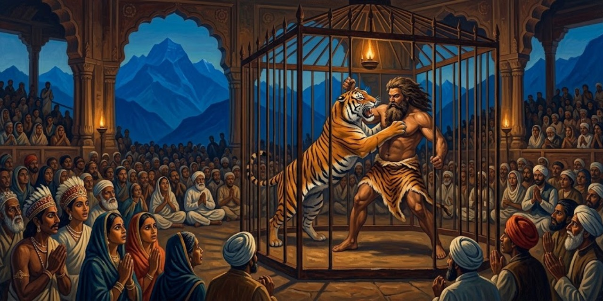
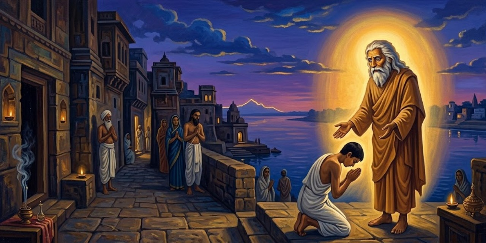
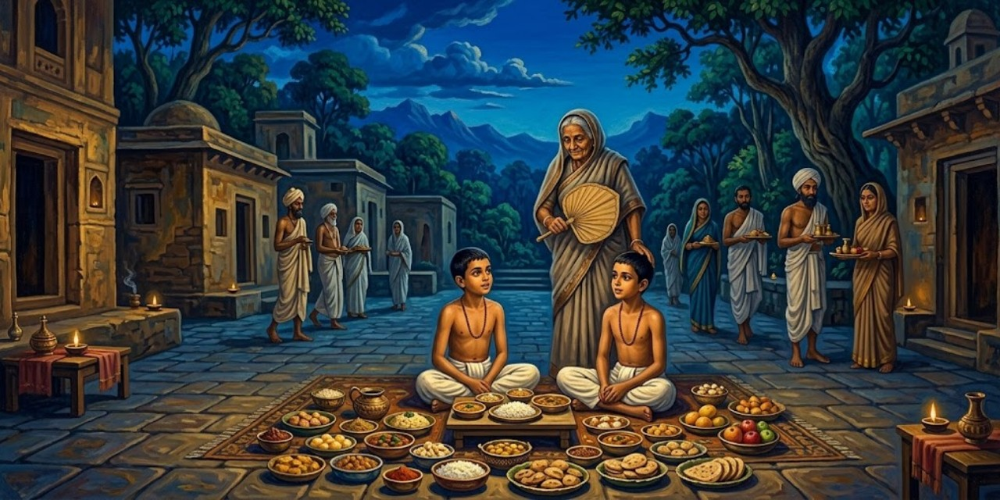
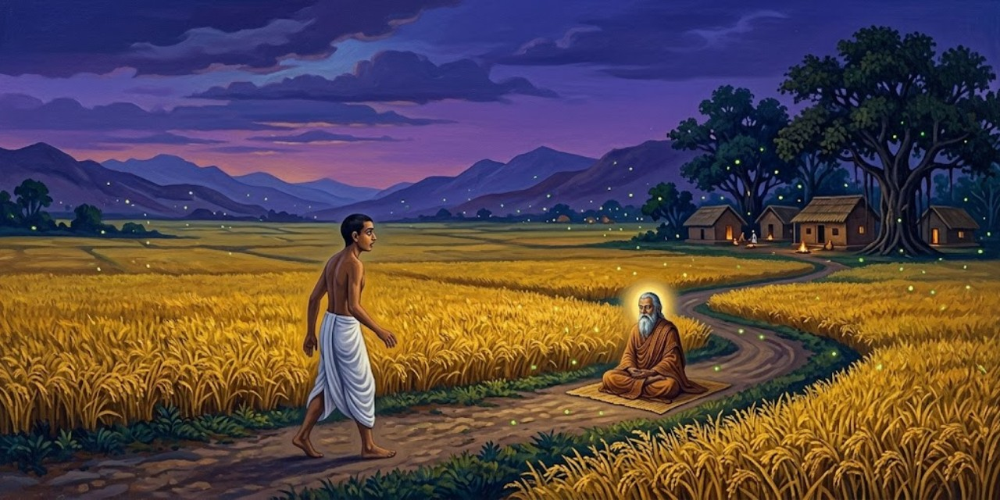
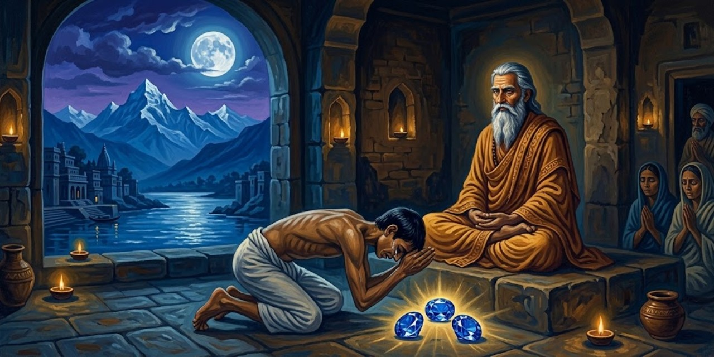
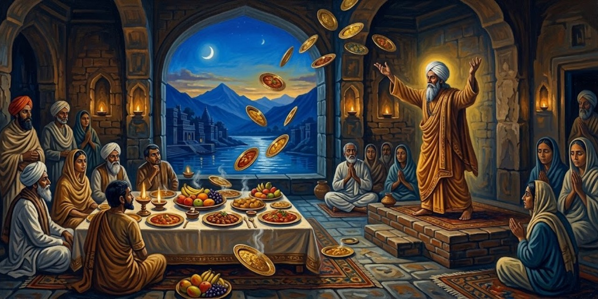
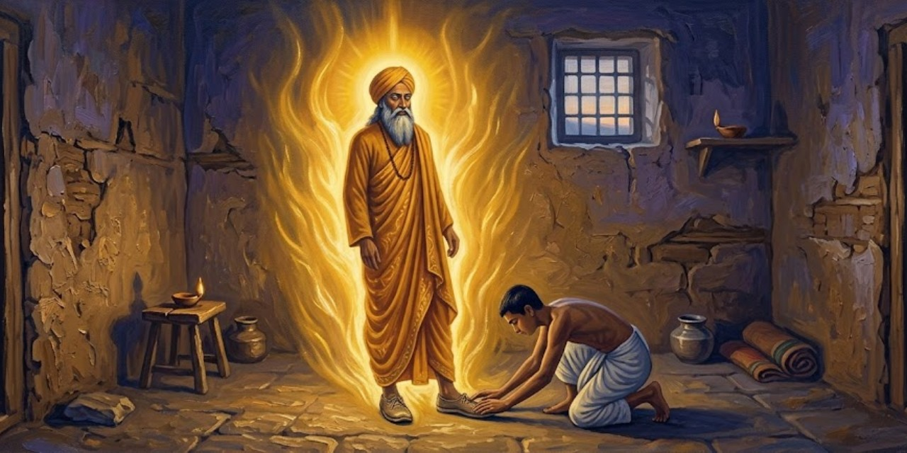

17 de octubre de 2026
Autobiografía de un yogui

Paramhansa Yogananda
Yogananda nació en la India de finales del siglo diecinueve y llegó a ser el gran introductor del yoga en Occidente. En esta autobiografía, publicada en 1946, cuenta su vida en primera persona: la infancia en Gorakhpur, la búsqueda del maestro, los años de disciplina y el largo viaje a América. Es a la vez una memoria de santos, yoguis y milagros y el libro que abrió las enseñanzas de la India a millones de lectores del mundo occidental.
Capítulo 1: Mis padres y mi primera infancia

El libro empieza con una confesión asombrosa: el autor dice que recuerda su vida anterior. De niño ya sabía que había sido un yogui del Himalaya.
Clear recollections came to me of a distant life, a yogi amidst the Himalayan snows.
Me venían recuerdos nítidos de una vida lejana: un yogui entre las nieves del Himalaya.
Yogananda
También recuerda la rabia de ser un bebé: lo entendía todo y no podía ni caminar ni hablar. Esa impotencia lo ponía a orar.
Prayerful surges arose within me as I realized my bodily impotence.
Me subían oleadas de oración al reconocer mi impotencia corporal.
Yogananda
Su padre, Bhagabati, era un matemático serio y austero; su madre, una reina de corazones, enseñaba solo con amor. Cuando ella murió, el padre cambió:
I noticed then that his gaze often metamorphosed into my mother’s.
Noté entonces que su mirada se metamorfoseaba a menudo en la de mi madre.
Yogananda
Abinash, un empleado del ferrocarril, le contó al niño cómo su padre se hizo discípulo del gran maestro Lahiri Mahasaya. Abinash había pedido permiso para visitarlo en Benarés y el padre se burló de él. Camino a casa, el corazón de Abinash repetía:
My heart was repeating: ‘Lahiri Mahasaya! I cannot live without seeing you!’
Mi corazón repetía: «¡Lahiri Mahasaya! ¡No puedo vivir sin verte!».
Abinash
En ese instante, en medio del campo, el maestro se apareció y regañó al padre:
‘Bhagabati, you are too hard on your employee!’
«¡Bhagabati, eres demasiado duro con tu empleado!».
Lahiri Mahasaya
El padre no solo dio el permiso: partió él mismo a Benarés con su esposa. Al entrar en la casita del maestro, este lo recibió con una frase que lo dejó helado:
His words were the same as those he had used two days before in the Gorakhpur field.
Sus palabras fueron las mismas que había usado dos días antes en el campo de Gorakhpur.
Yogananda
El maestro inició a los padres en la práctica del kriya yoga y les dejó una profecía sobre el hijo que vendría, según recuerda Abinash:
Lahiri Mahasaya took a definite interest in your own birth. Your life shall surely be linked with his own: the master’s blessing never fails.
«Lahiri Mahasaya se interesó de modo especial en tu propio nacimiento. Tu vida estará sin duda unida a la suya: la bendición del maestro nunca falla».
Abinash
Lahiri Mahasaya murió poco después de que Yogananda naciera, pero su retrato presidía el altar de la casa, y el niño fue descubriendo que el maestro seguía presente:
As I began to discover his secret omnipresence, I lamented no more.
Cuando empecé a descubrir su secreta omnipresencia, dejé de lamentarme.
Yogananda
A los ocho años, enfermo de cólera y ya sin esperanza de los médicos, su madre le señaló el retrato: «Inclínate ante él por dentro». El niño miró la foto:
I gazed at his photograph and saw there a blinding light, enveloping my body and the entire room.
Miré fijo su fotografía y vi allí una luz cegadora, que envolvía mi cuerpo y la habitación entera.
Yogananda
El cólera desapareció al instante. Esa foto tenía su propia historia milagrosa: el maestro odiaba que lo fotografiaran y en las placas salía borrado. Un fotógrafo presumió de que lograría retratarlo, fracasó doce veces y fue llorando a verlo. Lahiri Mahasaya le explicó:
“I am Spirit. Can your camera reflect the omnipresent Invisible?”
«Yo soy Espíritu. ¿Puede tu cámara reflejar al Invisible omnipresente?».
Lahiri Mahasaya
Al día siguiente el maestro posó por única vez: esa es la foto que sanó al niño y que se reproduce en el libro. Poco después de sanar, el niño tuvo una visión: cerró los ojos y vio sabios meditando en cuevas de montaña. Preguntó quiénes eran:
“We are the Himalayan yogis.”
«Somos los yoguis del Himalaya».
Los yoguis de la visión
El niño gritó que quería ir al Himalaya y ser como ellos. La visión se disolvió en una luz que crecía y crecía, y una voz habló desde la luz. Iswara es el Señor, Dios hecho persona:
“I am Iswara. I am Light.”
«Yo soy Iswara. Yo soy Luz».
La voz en la luz
El niño pidió fundirse en Él, y del éxtasis le quedó una frase para toda la vida:
“He is eternal, ever-new Joy!”
«¡Él es Gozo eterno, siempre nuevo!».
Yogananda
Otro recuerdo de esa época: en Lahore, el niño tenía un altar casero a la Madre Divina y una certeza absoluta:
An unequivocal conviction came over me that fulfillment would crown any of my prayers uttered in that sacred spot.
Una convicción inequívoca se apoderó de mí: toda oración hecha en ese rincón sagrado se cumpliría.
Yogananda
Su hermana Uma se burló: que pidiera entonces las dos cometas que volaban enfrente. El niño oró; una cometa cayó a sus pies y luego la otra. Uma salió corriendo, espantada:
“Indeed, Divine Mother listens to you! This is all too uncanny for me!”
«¡Es verdad, la Madre Divina te escucha! ¡Esto es demasiado raro para mí!».
Uma, su hermana
Capítulo 2: La muerte de mi madre y el amuleto místico

El deseo más grande de la madre era ver casado a Ananta, el hijo mayor. Todo estaba listo en Calcuta para la boda cuando el niño, de unos once años, tuvo una visión a medianoche en Bareilly: su madre se le apareció junto a la cama y le pidió que despertara al padre y tomara el primer tren si querían verla con vida. El padre no creyó. Por la mañana llegó el telegrama: madre grave, boda pospuesta, vengan de inmediato. Llegaron tarde. Años pasaron antes de que el dolor cediera, y la sanación llegó como respuesta a sus gritos:
“It is I who have watched over thee, life after life, in the tenderness of many mothers! See in My gaze the two black eyes, the lost beautiful eyes, thou seekest!”
«Soy yo quien te ha cuidado, vida tras vida, en la ternura de muchas madres. ¡Mira en mi mirada los dos ojos negros, los hermosos ojos perdidos que buscas!».
La Madre Divina
El padre no volvió a casarse en casi cuarenta años: «el servicio hacia mí terminó con tu madre», dijo cuando le ofrecieron una enfermera. Catorce meses después de la muerte, Ananta llamó al niño a su lado. Había acompañado a la madre en su lecho de muerte y guardaba un mensaje suyo:
“Mukunda, I have been reluctant to give you strange tidings.”
«Mukunda, me he resistido a darte noticias extrañas».
Ananta, su hermano mayor
La madre había pedido que el mensaje se entregara al cumplirse un año. Así empezaba:
“Let these words be my final blessing, my beloved son Mukunda!”
«Que estas palabras sean mi bendición final, mi amado hijo Mukunda».
La madre, en su lecho de muerte
Contaba que, siendo él un bebé, lo había llevado a Benarés, a casa de su gurú Lahiri Mahasaya. Casi escondida entre los discípulos, oraba para que el maestro se fijara en el niño:
While I patted you, I was praying that the great guru take notice and bestow a blessing. As my silent devotional demand grew in intensity, he opened his eyes and beckoned me to approach.
«Mientras te acariciaba, oraba para que el gran gurú se fijara en ti y te diera su bendición. A medida que crecía mi silenciosa demanda de devoción, él abrió los ojos y me hizo señas de acercarme».
La madre
El maestro sentó al bebé en su regazo y profetizó que sería un yogui que llevaría muchas almas a Dios. Pero el suceso más singular de su vida fue otro: un sadhu, un asceta errante, apareció un día en Lahore pidiendo ver «a la madre de Mukunda»:
‘Mother,’ he said, ‘the great masters wish you to know that your stay on earth will not be long.’
«Madre —dijo—, los grandes maestros desean que sepas que tu estancia en la tierra no será larga».
El sadhu
El sadhu anunció un amuleto de plata que se materializaría en las manos de ella al meditar; debía legarlo a Mukunda cuando estuviera listo para buscar a Dios, y, cumplido su propósito, desaparecería. A la tarde siguiente, el amuleto apareció entre sus palmas, frío y liso. Lo guardó más de dos años. Su despedida:
Do not grieve for me, as I shall have been ushered by my great guru into the arms of the Infinite.
«No te aflijas por mí, pues mi gran gurú me habrá llevado ya a los brazos del Infinito».
La madre
Con el amuleto en su poder, el niño sintió despertar memorias dormidas: venía de maestros de vidas pasadas que guiaban sus pasos. Mientras tanto, el muchacho que no lograba escaparse al Himalaya viajaba lejos cada día en las alas de su amuleto.
Capítulo 3: El santo de los dos cuerpos

El padre le permitió un viaje a Benarés con dos cartas: una para un amigo suyo cuya dirección había perdido, y otra de presentación para el swami Pranabananda, discípulo de Lahiri Mahasaya, que sabría encontrarlo. El swami lo recibió como a un viejo amigo, adivinó quién era antes de leer la carta y bromeó: gozaba de dos pensiones, una del ferrocarril por recomendación del padre y otra «del Padre Celestial», una pensión de paz insondable. Luego cayó en un silencio de esfinge, del que salió solo para anunciar que el hombre buscado llegaría en media hora. El niño no entendía nada:
The swami has spoken to no one but myself since my arrival!
«¡El swami no ha hablado con nadie más que conmigo desde que llegué!».
Yogananda
Bajó las escaleras y se topó con Kedar Nath Babu, que subía apurado: el swami lo había encontrado bañándose en el Ganges una hora antes y lo había invitado a su casa, donde, le dijo, lo esperaba el hijo de Bhagabati. El niño se quedó helado:
“Why, that man, Swami Pranabananda, has not left my sight a moment since I first came about an hour ago.”
«Pero si ese hombre, el swami Pranabananda, no se ha apartado de mi vista ni un momento desde que llegué, hace una hora».
Yogananda
Subieron juntos. El visitante susurró, señalando las sandalias de madera del santo:
“He was clad only in a loincloth, just as I see him now.”
«Iba vestido solo con el taparrabo, tal como lo veo ahora».
Kedar Nath Babu
El swami sonrió y explicó que para los yoguis verdaderos la unidad del mundo no es un misterio: pueden verse y conversar a distancia y atravesar a voluntad la materia. Luego habló de su maestro:
He was Divinity Itself in the form of flesh.
«Era la Divinidad misma en forma de carne».
Swami Pranabananda
Y contó su propia historia: ocho años meditando media noche después del trabajo en el ferrocarril, con percepciones luminosas, pero:
But a little veil always remained between me and the Infinite.
«Pero siempre quedaba un velo sutil entre el Infinito y yo».
Swami Pranabananda
Una noche entera suplicó a Lahiri Mahasaya que intercediera por él. La respuesta del maestro fue escueta:
You must meditate more profoundly.
«Debes meditar más profundamente».
Lahiri Mahasaya
El discípulo insistió hasta el alba; al fin el maestro extendió la mano: «Ya intercedí por ti ante Brahma; ve a meditar».
Immeasurably uplifted, I returned to my home. In meditation that night, the burning Goal of my life was achieved.
«Inmensamente elevado, volví a mi casa. En la meditación de esa noche, la meta ardiente de mi vida se cumplió».
Swami Pranabananda
Desde entonces:
Never from that day has the Blissful Creator remained hidden from my eyes behind any screen of delusion.
«Desde ese día, el Creador bienaventurado jamás ha vuelto a esconderse de mis ojos tras ninguna pantalla de ilusión».
Swami Pranabananda
Pidió entonces al maestro que lo librara del empleo; este le mandó pedir la pensión y decir lo que sentía: que una sensación arrolladora le subía por la columna y lo inutilizaba para el trabajo. El médico se la concedió sin más preguntas:
Automatically they obeyed the great guru’s spiritual direction, and freed me for a life of unbroken communion with the Beloved.
«Obedecieron automáticamente la dirección espiritual del gran gurú, y me liberaron para una vida de comunión ininterrumpida con el Amado».
Swami Pranabananda
Al despedirse, el swami bendijo al niño y le profetizó que su vida pertenecía al camino de la renunciación y el yoga, y que volverían a verse, con su padre, más adelante. Los años cumplieron ambas predicciones.
Capítulo 4: Mi fuga frustrada hacia el Himalaya

La fuga se planeó como una operación de guerra: un amigo de la escuela, Amar, recogería en un carruaje el bulto lanzado desde la ventana (una manta, sandalias, la foto de Lahiri Mahasaya, el Bhagavad Gita y dos taparrabos) y ambos partirían al Himalaya vestidos de europeos para despistar a Ananta, el hermano detective. En el camino se sumó el primo Jatinda, que desertó en la primera estación (confesó después que lo espantó la promesa de Mukunda de que los tigres se sentarían a recibir caricias: él ya se veía entrando en el estómago de uno «por entregas»). En un andén, un inspector con un telegrama de Ananta interrogó a los muchachos; Amar le advirtió antes a Mukunda:
All I ask of you, Mukunda, is to keep still.
«Lo único que te pido, Mukunda, es que te quedes quieto».
Amar
Amar se inventó que eran «Thomas» y «Thompson», dos muchachos medio ingleses, y el inspector, desarmado, los acomodó en el vagón de europeos. Llegaron a Hardwar al amanecer, pero allí los esperaba un policía: Ananta había telegrafiado a toda la línea. Mientras los custodiaba, el oficial les contó que él sí había conocido a un santo de verdad, días antes, junto al Ganges. Creyendo que era un asesino prófugo, le había hundido el hacha en el brazo; el santo siguió caminando sin quejarse, se recompuso el brazo colgante ante sus ojos y le dijo:
The Beloved Mother is taking care of me.
«La Madre Amada me está cuidando».
El sadhu, según el oficial
Tres días después no tenía ni cicatriz. Los muchachos lamentaron su suerte: el policía había encontrado a un santo sin buscarlo, y ellos, que lo buscaban con ahínco, terminaron en una estación de policía. Ananta llegó a recogerlos y propuso un trato: visitar a un sabio en Benarés, ver al padre afligido en Calcuta, y luego Mukunda podría volver a buscar a su maestro. Amar desertó, ablandado por el calor de familia:
But I knew I would never abandon the quest for my guru.
«Pero yo sabía que jamás abandonaría la búsqueda de mi gurú».
Yogananda
En Benarés, el sabio y su hijo, contratados en secreto por Ananta, le pronosticaron desgracias si abandonaba sus deberes mundanos. Sacudido, el muchacho oró pidiendo una señal inmediata, y un sadhu de noble porte que escuchaba desde fuera lo llamó aparte:
In response to your prayer, the Lord tells me to assure you that your sole path in this life is that of the renunciate.
«En respuesta a tu oración, el Señor me dice que te asegure que tu único camino en esta vida es el del renunciante».
El sadhu
El sabio oficial de la casa no quedó muy contento con la intromisión:
“That sadhu is just as crazy as you are.”
«Ese sadhu está tan loco como tú».
El pundit
De vuelta en Calcuta, el padre le pidió que al menos terminara la escuela y le puso un tutor de sánscrito, el swami Kebalananda, esperando calmar su inquietud con filosofía:
But the tables were subtly turned: my new teacher, far from offering intellectual aridities, fanned the embers of my God-aspiration.
«Pero la situación se invirtió sutilmente: mi nuevo maestro, lejos de ofrecer áridas disquisiciones intelectuales, avivó las brasas de mi anhelo de Dios».
Yogananda
El padre no sabía que Kebalananda era un discípulo exaltado de Lahiri Mahasaya. Entre lección y lección, el tutor le contaba cómo era estar cerca del maestro:
An indescribable peace blossomed within me at the master’s glance. I was permeated with his fragrance, as though from a lotus of infinity.
«Una paz indescriptible florecía en mí ante la mirada del maestro. Me impregnaba de su fragancia, como la de un loto del infinito».
Swami Kebalananda
The master was a living temple of God whose secret doors were open to all disciples through devotion.
«El maestro era un templo vivo de Dios, cuyas puertas secretas se abrían a todos los discípulos por la devoción».
Swami Kebalananda
No era un intérprete libresco: sumergía sin esfuerzo la mente en la «biblioteca divina» y de allí salían espuma de palabras y rocío de pensamientos:
Lahiri Mahasaya was no bookish interpreter of the scriptures. Effortlessly he dipped into the ‘divine library.’
«Lahiri Mahasaya no era un intérprete libresco de las escrituras. Se sumergía sin esfuerzo en la “biblioteca divina”».
Swami Kebalananda
Cuando le pedían explicar los estados de conciencia de los textos antiguos, sonreía y decía que primero los atravesaría él mismo, y mandaba a un discípulo cercano exponer las estrofas mientras él guiaba sus pensamientos:
‘Please expound the holy stanzas as the meaning occurs to you.’
«Expongan por favor las santas estrofas según les vaya ocurriendo el significado».
Lahiri Mahasaya
Nunca aconsejaba la fe servil:
‘Words are only shells,’ he said.
«Las palabras son solo cáscaras, decía; la convicción de la presencia de Dios se gana en el contacto gozoso de la meditación».
Kebalananda, citando a Lahiri Mahasaya
Y a cada problema de cada discípulo, la misma receta: la práctica del kriya yoga:
The yogic key will not lose its efficiency when I am no longer present in the body to guide you.
«La llave yóguica no perderá su eficacia cuando yo ya no esté presente en el cuerpo para guiarlos».
Lahiri Mahasaya
Kebalananda presenció también el milagro de Ramu, un discípulo ciego de nacimiento que abanicaba al maestro por horas. Animado por el tutor, Ramu pidió luz para sus ojos; el maestro protestó que él no tenía poder de curar, y Ramu respondió con lógica de devoto:
‘Sir, the Infinite One within you can certainly heal.’
«Señor, el Infinito que está en ti ciertamente puede curar».
Ramu
«Eso sí es distinto», concedió el maestro: le tocó el punto entre las cejas y le mandó cantar el nombre de Rama siete días; a la semana, Ramu vio por primera vez el rostro de la naturaleza. Los cuerpos que el maestro curó espectacularmente acabaron un día en las llamas de la cremación, cierra Kebalananda:
But the silent spiritual awakenings he effected, the Christlike disciples he fashioned, are his imperishable miracles.
«Pero los silenciosos despertares espirituales que obró, los discípulos semejantes a Cristo que formó, son sus milagros imperecederos».
Swami Kebalananda
Capítulo 5: Un «santo de los perfumes» exhibe sus maravillas

El encuentro con el Santo de los Perfumes tuvo dos prólogos. El primero, en el templo de Kalighat, ante la imagen de Kali: un sadhu errante leyó en voz alta la confusión de sus pensamientos sobre los aspectos benignos y terribles de la naturaleza:
“You have indeed penetrated the bewilderment of my thoughts!”
«¡De veras ha penetrado usted la confusión de mis pensamientos!».
Yogananda
El sadhu disertó sobre el enigma del bien y del mal, sobre el autoescrutinio que pulveriza el ego y produce videntes, y sobre la compasión que madura cuando uno descubre la unidad de todas las mentes:
“The saints of every age, sir, have felt like yourself for the sorrows of the world.”
«Los santos de todas las épocas, señor, han sentido como usted por los dolores del mundo».
Yogananda
By ignoble whips of pain, man is driven at last into the Infinite Presence, whose beauty alone should lure him.
«Con ignominiosos latigazos de dolor, el hombre es empujado al fin a la Presencia Infinita, cuya belleza por sí sola debería atraerlo».
El sadhu de Kalighat
Al despedirse, el sadhu le profetizó: «Después de que salgas de aquí hoy, te llegará una experiencia inusual». A la vuelta de una esquina lo atrapó un viejo conocido conversador, de esos que ignoran el tiempo:
Inwardly I petitioned the Goddess Kali to devise a graceful means of escape.
«En mi interior le pedí a la diosa Kali que ideara un medio elegante de escape».
Yogananda
El hombre lo soltó por fin, pero volvió corriendo solo para decirle que en esa casa estaba Gandha Baba, el Santo de los Perfumes: «Puedes tener una experiencia inusual». La profecía repetida lo decidió a entrar. Sobre una piel de leopardo, el yogi regordete le ofreció un perfume. Siguió un duelo verbal: ¿esclavizar a Dios para hacer olores?, ¿doce años de práctica para fabricar lo que cuesta unas rupias en la floristería? El santo, divertido, capituló:
Mr. Philosopher, you please my mind.
«Señor Filósofo, me complace su mente».
Gandha Baba
«Extiende la mano derecha», le ordenó. Sin tocarlo, le preguntó qué perfume quería: «Rosa». Y de la palma de la mano brotó con fuerza una fragancia de rosa; luego, a pedido del muchacho, una flor blanca sin olor se llenó al instante de jazmín. En casa, su hermana Uma olió ambas maravillas, lo que descartó la autosugestión. Un discípulo le contó que el maestro de Gandha Baba era un yogi tibetano de más de mil años; años después entendería que estos prodigios eran materializaciones reales de vibraciones, no hipnosis. Espectaculares, pero espiritualmente inútiles, concluye: desvíos de la búsqueda seria de Dios, como el fakir que se enorgullece de dominar el agua (¡una rana también se mueve en el agua!, se burlaba el místico persa Abu Said). Ni el sabio de Kalighat ni el yogi entrenado en el Tíbet colmaron su anhelo:
A guru too literally “marvelous” was not to my liking.
«Un gurú demasiado literalmente “maravilloso” no era de mi gusto».
Yogananda
Capítulo 6: El Swami Tigre

Un amigo de la escuela, Chandi, consiguió la dirección del famoso Sohong Swami, que antes de ser monje peleaba tigres a puño limpio. Tras una larga espera (la ley no escrita de la India: el buscador de la verdad debe tener paciencia), entraron en su cuarto y se quedaron mudos ante su cuerpo titánico: bíceps como balones, ojos con algo de paloma y de tigre, y por toda ropa una piel de tigre en la cintura. ¿Cómo se somete a puñetazos a un bengalí real? «Ustedes ven tigres; yo veo gatitos», se rio él. El muchacho objetó que podría convencer a su subconsciente, pero no al tigre. La clave, explicó el swami, es que la mente empuña los músculos: el cuerpo lo fabrica y lo sostiene la mente. Y confesó su propio comienzo:
My will was mighty, but my body was feeble.
«Mi voluntad era poderosa, pero mi cuerpo era débil».
El Swami Tigre
I have every reason to extol the compelling mental vigor which I found to be the real subduer of royal Bengals.
«Tengo sobradas razones para ensalzar el vigor mental arrollador que resultó ser el verdadero domador de los bengalíes reales».
El Swami Tigre
Cuando el muchacho preguntó si él también podría pelear tigres, el swami sonrió: sí, pero hay muchas clases de tigres, y algunos rondan las junglas de los deseos humanos; mejor vencer a esos merodeadores internos. Y contó su conversión. En la cumbre de la fama, la embriaguez del orgullo lo llevó a exhibirse en funciones públicas. Su padre le advirtió entonces que en la familia de la jungla había resentimiento contra él, y que un santo le había dejado una predicción ominosa: su próximo encuentro con un tigre le causaría heridas graves y seis meses de enfermedad mortal. El joven domador se rebeló:
I beg you not to impose any command that I change my way of life.
«Le ruego que no me imponga ninguna orden de cambiar mi modo de vida».
El Swami Tigre, a su padre
La predicción, sin embargo, era explícita sobre lo que vendría después del castigo:
He shall then forsake his former ways and become a monk.
«Abandonará entonces su antigua vida y se hará monje».
El santo, según el padre
I considered that Father had been the credulous victim of a deluded fanatic.
«Pensé que mi padre había sido la víctima crédula de un fanático engañado».
El Swami Tigre
Poco después viajó a Cooch Behar, donde la ciudad entera se alborotó con su visita:
He must be an incarnation of the king of tigers himself!
«¡Debe ser una encarnación del mismísimo rey de los tigres!».
Los murmullos de la calle
El príncipe de Cooch Behar lo mandó buscar con carruaje y sombrilla, lo recibió en persona y le escupió la duda sarcástica: un bengalí de ciudad, criado a arroz blanco, solo pudo haber peleado con animales drogados de opio. Ante la pregunta de si era cierto que peleaba tigres salvajes a mano desnuda, la respuesta fue seca:
It is quite true.
«Es completamente cierto».
El Swami Tigre
El príncipe lo desafió a pelear con Raja Begum, su tigre recién capturado: si lo aturdía, lo encadenaba y salía de la jaula por su pie, se lo regalaba con miles de rupias; si se negaba, lo proclamaría impostor en todo el estado. La semana previa, los aldeanos corrían versiones fantásticas: que Raja Begum era un espíritu maligno reencarnado, o la respuesta del Cielo Tigre a las plegarias de los animales humillados. El swami, filosófico sobre la cautela del príncipe, que no le permitió ver al tigre antes del combate:
Whether the prince feared I might seek to hypnotize the beast, or secretly feed him opium, I know not!
«Si el príncipe temía que yo intentara hipnotizar a la bestia o darle opio en secreto, ¡no lo sé!».
El Swami Tigre
El día del combate, ante miles de espectadores aterrados, entró en la jaula semidesnudo. El tigre le destrozó la mano derecha de un zarpazo; él escondió los dedos sangrantes bajo la ropa y peleó con la izquierda hasta derrumbar a la bestia de un golpe final. «¡Como un gatito!», interpuso el muchacho, y el swami rio de gusto. Aún le abrió las fauces y metió la cabeza dentro, lo encadenó, y cuando el tigre traicionero rompió la cadena y se le echó encima, lo volvió a inmovilizar. La ciudad entró en fiesta, le llovieron monedas de oro y le regalaron a Raja Begum, pero:
A spiritual change had entered my heart.
«Un cambio espiritual había entrado en mi corazón».
El Swami Tigre
Siguieron seis meses al borde de la muerte por envenenamiento de la sangre, como había predicho el santo. Al sanar, se lo confesó a su padre:
I know now that my teacher is the holy man who gave the wise warning.
«Ahora sé que mi maestro es el santo que dio la sabia advertencia».
El Swami Tigre
Y un día el santo llegó sin anunciarse: «Basta de domar tigres; ven conmigo, te enseñaré a someter las bestias de la ignorancia que rondan las junglas de la mente humana. Estás acostumbrado a tener público: que sea una galaxia de ángeles». Lo inició en el camino espiritual:
Hand in hand, we soon set out for my training in the Himalayas.
«De la mano, partimos pronto hacia mi entrenamiento en los Himalayas».
El Swami Tigre
Capítulo 7: El santo levitante

Un amigo le contó haber visto a un yogi flotar en el aire durante una reunión nocturna; el muchacho adivinó el nombre: Bhaduri Mahasaya, que vivía cerca de su casa y al que visitaba a menudo. El santo llevaba veinte años sin salir de su clausura, dominaba los pranayamas con tal fuerza que una vez pareció levantar una tormenta en la habitación, y luego quedaba en la calma vívida de la superconciencia. Bhaduri lo recibía con libertad («que Mukunda venga cuando quiera»), porque los mundanos no aprecian la franqueza que rompe sus ilusiones:
His own face was always serious, yet touched with an ecstatic smile.
«Su rostro era siempre serio, aunque tocado por una sonrisa extática».
Yogananda
Le dio un consejo que llevaba una profecía escondida: le habló de sus corresponsales de la lejana América, que redescubrían la India «con mejor sentido de la orientación que Colón», y le dijo que lo esencial para la salvación humana no debía diluirse para Occidente:
I did not realize that his speech was a veiled prophetic guidance.
«No me di cuenta de que sus palabras eran una guía profética velada».
Yogananda
Solo al escribir estas líneas, años después, entiende que el santo le anunciaba que llevaría las enseñanzas de la India a América. En las reuniones vespertinas, Bhaduri hablaba de la princesa Mirabai, que abandonó su corte por los sadhus y respondió al sannyasi que la rechazaba por mujer: «Dile al maestro que yo no sabía que hubiera otro Macho en el universo fuera de Dios; ¿no somos todos hembras ante Él?». Un estudiante, despediéndose, se arrodilló admirado:
“Master, you are wonderful!”
«¡Maestro, usted es maravilloso!».
Un estudiante
Le alababa haber renunciado a las riquezas y comodidades por buscar a Dios. El santo lo corrigió con una sonrisa: estaba invirtiendo los términos.
I have left a few paltry rupees, a few petty pleasures, for a cosmic empire of endless bliss.
«He dejado unas pocas rupias miserables, unos pocos placeres mezquinos, por un imperio cósmico de dicha infinita».
Bhaduri Mahasaya
¿Qué sacrificio hay en eso? Los verdaderos renunciantes, cerró, son los mundanos: cambian una posesión divina sin par por un puñado de juguetes terrenales. Años después, antes de embarcar a América, el joven se arrodilló ante él por la bendición de despedida: «Hijo, ve a América; toma por escudo la dignidad de la antiquísima India; la victoria está escrita en tu frente».
Capítulo 8: El gran científico de la India, J. C. Bose

En una acera oyó a unos profesores decir que las invenciones inalámbricas de Jagadis Chandra Bose eran anteriores a las de Marconi, y al día siguiente visitó al sabio en su casa de Gurpar Road. Bose, formado en Cambridge, unía la verificación experimental occidental con la introspección oriental; su crescógrafo alcanzaba diez millones de aumentos y demostraba que las plantas tienen un sistema nervioso sensible y una vida emocional variada:
“You have done much, sir, to hasten the embrace of East and West in the impersonal arms of science.”
«Usted ha hecho mucho, señor, por apresurar el abrazo de Oriente y Occidente en los brazos impersonales de la ciencia».
Yogananda
The unique throb of life in all creation could seem only poetic imagery before your advent, Professor!
«¡El latido único de la vida en toda la creación solo podía parecer imaginería poética antes de su llegada, profesor!».
Yogananda
Le contó que un santo que conoció jamás cortaba flores («¿voy a robarle al rosal su orgullo de belleza?»), y remató:
His sympathetic words are verified literally through your discoveries!
«¡Sus palabras compasivas se verifican literalmente en sus descubrimientos!».
Yogananda
En la inauguración del Instituto Bose, entre una puerta centenaria rescatada de un santuario y un templo dedicado al Noúmeno sin imagen alguna, el discurso del científico sonó a rishi antiguo: dedicaba el instituto no como laboratorio sino como templo; narró cómo los fisiólogos de la Royal Society le aconsejaron no invadir sus predios («había caído sin saberlo en el dominio de un sistema de castas desconocido»); prometió que jamás se tomarían patentes y que las puertas estarían abiertas a investigadores de todos los países, como en Nalanda y Taxila veinticinco siglos atrás:
Tears stood in my eyes at the scientist’s concluding words.
«Las palabras finales del científico me llenaron los ojos de lágrimas».
Yogananda
En el laboratorio, el crescógrafo mostró al muchacho un helecho creciendo ante sus ojos, deteniéndose al roce de una varilla, reanimándose con el antídoto tras el cloroformo y agitándose en espasmos de dolor ante la navaja, hasta la inmovilidad final de la muerte. Un trozo de estaño registró fatiga y recuperación como un ser vivo. Y la predicción mayor de Bose:
Everything in man has been foreshadowed in the plant.
«Todo lo que hay en el hombre ha sido prefigurado en la planta».
J. C. Bose
Años después, en 1938, investigadores de la Universidad de Columbia confirmaron que las fibras de la planta nitella propagan ondas eléctricas idénticas a las de las fibras nerviosas de animales y hombres: la «piedra Rosetta» entre la mente y la materia que Bose ya había anunciado.
Capítulo 9: El devoto dichoso y su romance cósmico

Entró en silencio en la habitación y el santo lo recibió sin volverse: «Siéntate, señorcito; estoy hablando con mi Madre Divina»:
The angelic appearance of Master Mahasaya fairly dazzled me.
«El aspecto angélico de Master Mahasaya me deslumbró por completo».
Yogananda
El saludo del santo le produjo el efecto más violento de su vida: una agonía de separación de la Madre Divina peor que la muerte de su madre. Cayó al suelo gimiendo y se aferró a los pies del maestro pidiendo su intercesión:
Beyond reach of doubt, I was convinced that Master Mahasaya was in intimate converse with the Universal Mother.
«Estaba convencido, fuera de toda duda, de que Master Mahasaya conversaba íntimamente con la Madre Universal».
Yogananda
El santo accedió a transmitir su ruego. Esa noche, meditando en su buhardilla, el muchacho tuvo la visión: la Madre Divina ante él, en esplendor: «Siempre te he amado. Siempre te amaré». A la mañana siguiente volvió muy temprano por la respuesta, y el maestro, que no había salido de su cuarto, sonrió: «¿Podría yo añadir una sola palabra a la seguridad que recibiste anoche a las diez de la Madre Hermosa en persona?». Y añadió:
Think you that your devotion did not touch the Infinite Mercy? The Motherhood of God, that you have worshiped in forms both human and divine, could never fail to answer your forsaken cry.
«¿Crees que tu devoción no conmovió la Misericordia Infinita? La Maternidad de Dios, a la que has adorado en formas humanas y divinas, jamás podría dejar sin respuesta tu grito desamparado».
Master Mahasaya
La casa de Amherst Street donde el santo dirigía una pequeña escuela era, por añadidura, el antiguo hogar del muchacho, la escena de la muerte de su madre: paredes sagradas, testigos de sus heridas y de su sanación. Allí no había reglas ni castigos: se enseñaban matemáticas superiores y una química del amor ausente de los libros. Cuando le llevó una guirnalda de champak, el santo la aceptó solo como ofrenda a la Madre que habitaba en su cuerpo. Y le anunció:
“I am not your guru; he shall come a little later,” he told me.
«Yo no soy tu gurú; él llegará un poco después».
Master Mahasaya
Discípulo de Sri Ramakrishna, Master Mahasaya lo llevó en barca por el Ganges al templo de Dakshineswar, donde cantaba el nombre de la Madre hasta romperle el corazón en mil pedazos. Su romance con la Beloved era inagotable y práctico: una tarde, acorralados por un conocido vanidoso que no paraba de hablar, le susurró al muchacho que la Madre había prometido recordarle al pesado «asuntos más urgentes» al llegar a la casa roja de la esquina; y así ocurrió, a mitad de frase. Otra vez lo sorprendió criticando en silencio a unos devotos que cantaban mecánicamente: «¿No es verdad, señorcito, que el nombre de la Amada suena dulce en todos los labios, ignorantes o sabios?»:
“He can serve as an earthly prototype for the very angels of heaven!”
«¡Puede servir de prototipo terrenal a los mismísimos ángeles del cielo!».
Yogananda
Un día le ofreció ir a ver «bioscopos». El primero fue una conferencia universitaria mortalmente aburrida, de la que la Madre Divina los rescató apagando las luces de la sala hasta que salieron. El segundo fue mejor: un golpecito suave en el pecho, y la Calcuta entera pasó ante sus ojos en silencio absoluto y omnipresente, como una película muda bañada en una luz apacible, hasta que otro golpecito devolvió el estrépito del mundo. De ese hijo seráfico de la Madre Divina cierra el capítulo:
But ever enshrined in memory is the seraphic son of Divine Mother-Master Mahasaya!
«¡Pero para siempre consagrado en la memoria queda el hijo seráfico de la Madre Divina, Master Mahasaya!».
Yogananda
Capítulo 10: Encuentro a mi maestro, Sri Yukteswar

Aprobó el bachillerato por la vía de la Ingenuidad Infinita: su amigo Nantu le adelantó las preguntas trampa de los exámenes, y unas hojas sueltas de versos sánscritos encontradas en un solar le resolvieron la prueba de sánscrito al día siguiente. Libre de su promesa al padre, decidió partir a un ermitaño en Benarés con su amigo Jitendra. La despedida:
Let me go, that I someday return with a more divine understanding.
«Déjame ir, para volver un día con un entendimiento más divino».
Yogananda, a su padre
En la ermita de Mahamandal, los compañeros no veían con buenos ojos que se encerrara a meditar en la buhardilla en vez de dedicarse a las tareas de la organización:
“Don’t try to catch God so soon!”
«¡No intentes atrapar a Dios tan pronto!».
Un compañero de la ermita
Dyananda, el joven swami director, le ordenó devolver el dinero que su padre le enviaba y no mencionar jamás el hambre. El muchacho ayunó veinticuatro horas de prueba, y justo ese día el tren de Dyanandaji se retrasó y nadie comería hasta su llegada:
“The next Benares death from starvation is due at once in this hermitage,” I thought.
«La próxima muerte por inanición en Benarés está a punto de ocurrir en esta ermita», pensé.
Yogananda
Cuando por fin cenó a las nueve, descubrió que Dyananda llevaba cuatro días sin comer ni beber por regla de su orden. Avergonzado, objetó que seguir esa disciplina a rajatabla podía llevarlo a morir de hambre. «¡Muere, entonces!», estalló el swami: nunca admitas que vives del poder de la comida y no del poder de Dios; el arroz, el dinero y los hombres son solo sus instrumentos indirectos:
There and then I tasted the Spirit’s all-sufficiency.
«Allí y entonces gusté la suficiencia absoluta del Espíritu».
Yogananda
Esos días el amuleto de plata desapareció de su caja cerrada, cumpliendo la predicción del sadhu: había vuelto al éter del que vino, pues su propósito estaba cumplido. Aislado y hostilizado en la ermita, una madrugada oró hasta la respuesta: «¡Tu Maestro llega hoy!», oyó una voz de mujer que venía de todas partes y de ninguna:
Suddenly I felt lifted as though bodily to a sphere uncircumscribed.
«De pronto me sentí elevado, como en cuerpo, a una esfera sin límites».
Yogananda
Esa mañana, en un mercado de Benarés, vio al final de un callejón a un swami de túnica ocre, inmóvil, que le resultó instantánea y antiguamente familiar. Pero la duda pudo más:
“You are confusing this wandering monk with someone known to you,” I thought.
«Estás confundiendo a este monje errante con alguien conocido», pensé.
Yogananda
Siguió caminando, y a los diez minutos sus pies se volvieron de piedra: no podían alejarse; al darse la vuelta, recobraban la ligereza:
“The saint is magnetically drawing me to him!”
«¡El santo me está atrayendo magnéticamente hacia él!».
Yogananda
Voló de regreso al callejón. La figura quieta seguía mirando en su dirección:
The divine face was none other than he of my thousand visions.
«El rostro divino no era otro que el de mis mil visiones».
Yogananda
“O my own, you have come to me!”
«¡Oh, mío propio, has venido a mí!».
Sri Yukteswar
Cuántos años te he esperado, repitió el gurú en bengalí, trémulo de gozo. Entraron en una unidad de silencio; el pasado, el presente y el futuro giraron como escenas de un solo tiempo:
This was not the first sun to find me at these holy feet!
«¡No era éste el primer sol que me encontraba a estos santos pies!».
Yogananda
En el balcón de piedra sobre el Ganges, el maestro le ofreció sus ermitas y todo lo que poseía; el muchacho respondió que venía por sabiduría y contacto con Dios. Entonces Sri Yukteswar le dio su amor incondicional y le pidió lo mismo: el amor ordinario es egoísta, enraizado en deseos:
The flux of the human heart is gone forever at the transfixing touch of pure love.
«El fluir del corazón humano desaparece para siempre al toque trascendente del amor puro».
Sri Yukteswar
Sin que el muchacho hubiera contado nada, el gurú le habló del amuleto perdido («no lo lamentes; cumplió su propósito») y de su situación infeliz en la ermita:
Like a divine mirror, my guru apparently had caught a reflection of my whole life.
«Como un espejo divino, mi gurú había captado al parecer el reflejo de toda mi vida».
Yogananda
“The living reality of your presence, Master, is joy beyond any symbol.”
«La realidad viva de tu presencia, Maestro, es un gozo superior a cualquier símbolo».
Yogananda
Le dio nombre y dirección (Swami Sri Yukteswar Giri, ermita de Serampore, a solo doce millas de Calcuta) y una orden que aguó el milagro: «Vendrás a mí en cuatro semanas», es decir, volver a casa, justo lo que el muchacho había jurado no hacer. Se despidió en tensión. En la ermita la hostilidad creció hasta que, tres semanas después, él y Jitendra partieron juntos a Serampore: el «pájaro joven» se disponía a «abatirse» peligrosamente cerca de Calcuta.
Capítulo 11: Dos muchachos sin un céntimo en Brindaban

En Agra, su hermano Ananta lo sermoneó: el padre haría bien en desheredarlo por tirar la vida. «Dios primero; el dinero es su esclavo», respondió el muchacho. Y como seguía declarándose independiente de la fortuna paterna, Ananta le propuso poner su filosofía a prueba en el mundo tangible. Los términos: ir con Jitendra a Brindaban esa misma mañana sin una rupia, sin mendigar, sin revelar su apuro a nadie, sin faltar a ninguna comida y sin quedarse varados; si volvía antes de medianoche, sería el hombre más asombrado de Agra:
“You well know, Ananta, I seek my inheritance from the Heavenly Father.”
«Bien sabes, Ananta, que busco mi herencia del Padre Celestial».
Yogananda
“I am conscious of my dependence on God.”
«Soy consciente de mi dependencia de Dios».
Yogananda
En la estación, Ananta los cacheó en busca de tesoros ocultos. Jitendra pidió un par de rupias de seguridad («hay algo reconfortante en el tintineo de las monedas») y Mukunda se negó en firme. Al despedirlos, al hermano escéptico le tembló la certidumbre:
“If by any chance or grace you pass successfully through the Brindaban ordeal, I shall ask you to initiate me as your disciple.”
«Si por casualidad o por gracia superas con éxito la prueba de Brindaban, te pediré que me inicies como tu discípulo».
Ananta
En el tren, Jitendra lo pellizcó: no veía señales de que Dios fuera a proveer la próxima comida. Pero en el último tramo dos desconocidos se interesaron por los muchachos, los montaron en un coche de caballos y los dejaron en una imponente ermita. Su explicación a la anfitriona:
As soon as we met on the train, I felt drawn to them as devotees of Lord Krishna.
«En cuanto nos conocimos en el tren, me sentí atraído por ellos como devotos del Señor Krishna».
Un desconocido del tren
La anfitriona, Gauri Ma, esperaba ese día a dos príncipes que habían cancelado a última hora: el banquete de treinta platos, digno de príncipes, fue para los dos muchachos. Jitendra rompió a llorar; Mukunda le devolvió el pellizco: «Tomás el incrédulo: el Señor trabaja, y con prisa». Después, bajo un árbol cadamba, Jitendra recayó en la duda («¿cómo vamos a ver la ciudad sin una pice?»), y un joven de agradable semblante se acercó a ofrecerse de guía. Ante el extraño honor, Mukunda preguntó por qué:
“You are my guru.”
«Tú eres mi gurú».
Pratap Chatterji
One face was yours, my master! Often have I seen it in meditation!
«¡Uno de los rostros era el tuyo, maestro mío! ¡Muchas veces lo he visto en meditación!».
Pratap Chatterji
Pratap, que había visto a los dos muchachos en una visión del Señor Krishna durante sus oraciones del mediodía, los llevó en carruaje por los templos de Krishna, los colmó de dulces y les compró los billetes de vuelta a Agra y un fajo de rupias. En un rincón apartado de la estación, Mukunda lo inició en el kriya de Lahiri Mahasaya, el chintamani que abrevia el millón de años de la evolución espiritual:
Be faithful in your practice; you will approach the Guru of all gurus.
«Sé fiel a tu práctica; te acercarás al Gurú de todos los gurús».
Yogananda, a Pratap
Jitendra lloró en el tren de vuelta, esta vez contra sí mismo: «¡Qué superficial mi confianza! ¡Nunca volveré a dudar de la protección de Dios!». Antes de medianoche, los dos «cenicientos» derramaron las rupias sobre la mesa de Ananta, que pasó de la broma a la solemnidad: la ley de la oferta y la demanda, concluyó, alcanza reinos más sutiles de lo que suponía:
“I understand for the first time your indifference to the vaults and vulgar accumulations of the world.”
«Comprendo por primera vez tu indiferencia ante las bóvedas y las vulgares acumulaciones del mundo».
Ananta
Esa misma noche Ananta recibió la iniciación: el «gurú» Mukunda cargó con dos discípulos no buscados en un solo día. Tras una visita al Taj Mahal, Jitendra se quedó en Calcuta con su familia, y el muchacho llegó solo a Serampore: habían pasado veintiocho días desde Benarés. «Vendrás a mí en cuatro semanas»:
Here I was, heart pounding, standing within his courtyard on quiet Rai Ghat Lane.
«Allí estaba yo, con el corazón desbocado, de pie en su patio de la apacible Rai Ghat Lane».
Yogananda
I entered for the first time the hermitage where I was to spend the best part of the next ten years with India’s Jyanavatar, “incarnation of wisdom.”
«Entré por primera vez en la ermita donde pasaría la mejor parte de los diez años siguientes con el Jyanavatar de la India, la “encarnación de la sabiduría”».
Yogananda
Capítulo 12: Años en la ermita de mi maestro

Sri Yukteswar lo recibió en su ermita de Serampore con frialdad deliberada: le reclamó la obediencia que le había negado en su primer encuentro, le ordenó volver con su familia y matricularse en la universidad de Calcuta, y le anunció que un día iría a Occidente, donde escucharían mejor a un maestro hindú con título. El muchacho aceptó su autoridad en cada detalle de su vida con una sola condición: «¡Prométame revelarme a Dios!». Tras una hora de forcejeo verbal, la palabra del maestro cayó con finalidad compasiva: «Que tu deseo sea mi deseo».
I had found eternal shelter in a true guru.
«Había encontrado refugio eterno en un verdadero gurú».
Yogananda
Al mostrarle la ermita, una casona antigua de patios con columnas, palomas en el tejado y un jardín de mangos y plátanos, la mirada del muchacho se clavó en un retrato de la pared engalanado con jazmines: Lahiri Mahasaya. El tono de Sri Yukteswar vibró de reverencia:
“Greater he was, as man and yogi, than any other teacher whose life came within the range of my investigations.”
«Más grande fue, como hombre y como yogui, que cualquier otro maestro cuya vida llegó al alcance de mis investigaciones».
Sri Yukteswar
A petición del muchacho, el maestro contó tres recuerdos de infancia, cada uno con su moraleja: el fantasma de la habitación oscura al que salió a buscar («mira el miedo a la cara y dejará de molestarte»), el perro feo del vecino que deseó con obstinación («el apego ciega y presta un halo imaginario al objeto del deseo») y la frase oída a su madre que lo alejó para siempre de todo empleo («las ideas tempranas quedan grabadas en la mente sensible del niño»). A la mañana siguiente le concedió la iniciación del kriya yoga, que ya había recibido de su padre y de su tutor, pero que en presencia del maestro fue otra cosa:
At his touch, a great light broke upon my being, like glory of countless suns blazing together.
«A su contacto, una gran luz irrumpió en mi ser, como la gloria de incontables soles ardiendo a la vez».
Yogananda
Volvió a Calcuta con orden de regresar en treinta días. Ningún pariente hizo los comentarios punzantes que temía sobre el regreso del «ave en vuelo». Subió a su buhardilla y la saludó como a una presencia viva: «Has presenciado mis meditaciones y las lágrimas y tempestades de mi sadhana; ahora he llegado al puerto de mi maestro divino». Su padre, discípulo también de Lahiri Mahasaya, se alegró por los dos:
Your master has proved no inaccessible Himalayan saint, but one near-by.
«Tu maestro no ha resultado ser un santo himalayo inaccesible, sino uno cercano».
My prayers have been answered: you have not in your search for God been permanently removed from my sight.”
«Mis plegarias han sido respondidas: no has sido apartado de mi vista para siempre en tu búsqueda de Dios».
Su padre
Se matriculó al día siguiente en el Scottish Church College, aunque sus lectores ya imaginarán que se le vio poco por las aulas: la ermita de Serampore ejercía un imán irresistible. La vida allí tenía un ritmo sereno: samadhi antes del alba (se sabía que el maestro había despertado cuando cesaban sus estupendos ronquidos), paseo junto al Ganges, baño, comida de mediodía, visitas por la tarde y discursos al caer la noche:
Those morning strolls with my guru—how real and vivid still!
«Aquellos paseos matutinos con mi gurú, ¡cuán reales y vivos todavía!».
Yogananda
En esas veladas, cada palabra suya parecía medida y cincelada por la sabiduría:
I was conscious always that I was in the presence of a living manifestation of God.
«Siempre fui consciente de estar en presencia de una manifestación viviente de Dios».
Yogananda
Una noche de mosquitos especialmente virulenta, el maestro no dio la orden habitual de colocar las cortinas. Picado de pies a cabeza y medio loco con el zumbido, el discípulo se acercó cautelosamente a su gurú y lo encontró sin respiración, frío e inmóvil; le puso un espejo bajo la nariz y hasta le tapó la boca y las fosas nasales para cerciorarse:
This was my first observation of him in the yogic trance; it filled me with fright.
«Era la primera vez que lo observaba en trance yóguico; me llenó de espanto».
Yogananda
«¡Conque un experimentador en ciernes! ¡Mi pobre nariz!», se rio el maestro al volver en sí. «¿Por qué no te acuestas? ¿Es que el mundo entero va a cambiar por ti? Cámbiate tú: líbrate de la conciencia de mosquito». El muchacho volvió sumiso a su cama y ni un insecto se atrevió a acercarse. Otra tarde, al alzar la mano vengadora contra un mosquito que le clavaba el aguijón, se detuvo recordando el aforismo de Patanjali sobre la ahimsa. «¿Por qué no terminaste la tarea?», le preguntó el maestro, que leía sus procesos mentales como un libro abierto: el golpe mortal ya se había dado en su mente. Y en Puri, un discípulo llamado Prafulla vio al maestro recibir con palmadas rítmicas y risa de bienvenida a una cobra de metro y veinte que se abalanzaba con la capucha desplegada:
The serpent, very close to my guru, was now motionless, seemingly magnetized by his caressing attitude.
«La serpiente, muy cerca de mi gurú, quedó entonces inmóvil, como magnetizada por su actitud acariciante».
Prafulla
La capucha se contrajo poco a poco y la cobra se deslizó entre los pies del maestro hasta perderse en los matorrales. Cuando el joven Yogananda se consumía de dispepsia crónica, flaco y de ojos hundidos, el maestro le dijo: «Las medicinas tienen límites; la fuerza creadora de la vida, ninguno. Cree esto: estarás bien y fuerte». En dos semanas ganó el peso que lo había eludido toda la vida. El propio Sri Yukteswar había pasado por lo mismo: convaleciente en Benarés, Lahiri Mahasaya lo hizo oscilar entre fuerza y debilidad según sus propias expectativas, hasta demostrarle que el pensamiento es una fuerza como la electricidad o la gravitación. «Maestro, si pienso que estoy bien y he recuperado mi peso, ¿sucederá?»:
‘It is so, even at this moment.’
«Así es, en este mismo momento».
Lahiri Mahasaya
En un solo día ganó veintitrés kilos que lo acompañaron para siempre. Su gurú, despierto en Dios, sabía que este mundo no es sino el sueño objetivado del Creador. Los milagros, en todo caso, no se hacen por capricho:
“A man of realization does not perform any miracle until he receives an inward sanction,” Master explained.
«Un hombre de realización no realiza ningún milagro hasta recibir una sanción interior», explicó el maestro.
Sri Yukteswar
La disciplina de la ermita era drástica: perfeccionista, el gurú no dejaba pasar ni un descuido de etiqueta ni un matiz de conducta, y reprendía con la misma llaneza delante de extraños que a solas. «Si no te gustan mis palabras, eres libre de irte en cualquier momento; no quiero nada de ti salvo tu propia mejora». Y a quienes desdeñaban los deberes mundanos:
“Those who are too good for this world are adorning some other,” Sri Yukteswar remarked.
«Quienes son demasiado buenos para este mundo están adornando algún otro», observó Sri Yukteswar.
Sri Yukteswar
Solo una vez vio el discípulo manso al león divino: cuando su padre salió despavorido de una visita («¡por los comentarios de tu gurú creí encontrarte hecho un completo desastre!») y el hijo fue a reclamar, el maestro, con los ojos bajos, se limitó a decir: «No volveré a hacerlo». Con los años, la relación entre ambos se hizo silenciosa y exacta:
My relationship with Sri Yukteswar, somewhat inarticulate, nonetheless possessed all eloquence.
«Mi relación con Sri Yukteswar, algo inarticulada, poseía sin embargo toda la elocuencia».
Yogananda
Kumar, un muchacho campesino de Bengala oriental de inteligencia brillante, llegó a ser el favorito del maestro, que un día lo puso a cargo de la ermita y degradó a Yogananda a escoba y cocina. La pequeña tiranía duró tres semanas: «Por eso te puse a ti en el salón y a él en la cocina: para que comprendieras que un líder digno desea servir y no dominar». Un año después, Kumar volvió de una visita a su aldea convertido en otro, cargado de malos hábitos, y el maestro, con lágrimas que dominó al instante, encargó a Yogananda comunicarle la expulsión:
He has rejected my protection; the callous world must be his guru still.”
«Ha rechazado mi protección; el mundo insensible tendrá que ser su gurú todavía».
Sri Yukteswar
Alegre sin frivolidad, el maestro recordaba a menudo que la santidad no exige cara larga:
“To seek the Lord, one need not disfigure his face,” he would remark.
«Para buscar al Señor no hace falta desfigurarse la cara», solía decir.
Sri Yukteswar
A los eruditos de pacotilla los despachaba con una sola pregunta. A un pundit que sacudía las vigas del ashram con citas del Mahabharata, las Upanishads y Shankara, le dijo: «Sigo esperando oírte a ti. ¿Qué comentario original puedes aportar desde tu propia vida? ¿Te contentas con ser una vitrola hueca que repite las palabras de otros hombres?». Su método de estudio era el del antiguo maestro Dabru Ballav: un solo pasaje del Bhagavad Gita, media hora de lectura y horas de meditación en silencio:
“Wisdom is not assimilated with the eyes, but with the atoms,” he said.
«La sabiduría no se asimila con los ojos, sino con los átomos», decía.
Sri Yukteswar
Ni los poderosos lo impresionaban. Un magistrado local de fama despótica, con poder de sobra para expulsarlos del ashram de Puri, se jactó entre gritos de haber salido primero en los exámenes de maestría: «Señor magistrado, olvida que esto no es su tribunal. Un título universitario no guarda relación alguna con la realización védica; los santos no se producen en serie cada semestre como los contables». Tras un silencio atónito, el visitante rompió a reír de buena gana:
“This is my first encounter with a heavenly magistrate,” he said.
«Es mi primer encuentro con un magistrado celestial», dijo.
El magistrado
Capítulo 13: El santo que no dormía

A los seis meses de vida en la ermita, una de esas ilusiones imprevisibles que asaltan al devoto le hizo sentir una impaciencia creciente por los deberes de la ermita y los estudios: pidió permiso a su maestro para irse a los Himalayas:
I hope in unbroken solitude to achieve continuous divine communion.”
«Espero alcanzar, en soledad ininterrumpida, la comunión divina continua».
Yogananda
La respuesta del maestro llegó lenta y sencilla: «muchos montañeses viven en los Himalayas y no poseen percepción de Dios; la sabiduría se busca mejor en un hombre de realización que en una montaña inerte». El muchacho ignoró la alusión clara e insistió en su ruego:
Sri Yukteswar vouchsafed no reply.
«Sri Yukteswar no se dignó responder».
Yogananda
Tomó el silencio por consentimiento, una interpretación precaria que siempre resulta cómoda, y a la mañana siguiente pidió a su profesor de sánscrito, Behari Pundit, la dirección de un gran discípulo de Lahiri Mahasaya: Ram Gopal Muzumdar, el «santo que no duerme», siempre despierto en una conciencia extática. Esperaba arrancarle una sanción para la meditación solitaria en el Himalaya. En el camino se detuvo ante el famoso santuario de Tarakeswar, venerado como el Lourdes de la India, donde su propia tía había obtenido un milagro para su tío Sarada: tras una semana de ayuno y oración en el templo, halló una hierba materializada en su mano, hizo un cocimiento y se lo dio a beber:
His disease vanished at once, and has never reappeared.”
«Su enfermedad desapareció al instante y nunca ha vuelto a aparecer».
Su tía
El ánimo austero del momento lo llevó a salir del templo sin inclinarse ante la piedra redonda del altar: Dios, reflexionaba, solo debe buscarse dentro del alma. Después erró el camino (un transeúnte oracular le indicó ªba la derecha» donde debía ser a la izquierda), pasó la noche en la choza de un campesino que al principio lo tomó por detective mentiroso, y al alba cruzó campos de arroz bajo un sol abrasador mientras cada campesino le juraba que Ranbajpur quedaba «a solo dos millas»:
Sleep was inconsiderable that night; I prayed deeply to be directed to the secret yogi, Ram Gopal.
«Dormí poco aquella noche; oré profundamente para ser guiado hasta el yogui secreto, Ram Gopal».
Yogananda
A media tarde, un hombre menudo y ligero, de un extraordinario par de ojos oscuros y penetrantes, se detuvo a su lado: «pensaba irme de Ranbajpur, pero tu propósito era bueno, así que te esperé». Y le echó en cara su orgullo: si Dios lo impregna todo, ¿por qué no te inclinaste ayer ante el Infinito en la piedra de Tarakeswar? Por eso el transeúnte te extravió, y por eso hoy lo has pasado tan mal. Maravillado, y de golpe refrescado en pleno campo ardiente, el muchacho escuchó la lección: el yoga es el camino más alto, nos dijo Lahiri Mahasaya, pero:
But discovering the Lord within, we soon perceive Him without.
«Pero al descubrir al Señor dentro, pronto lo percibimos fuera».
Ram Gopal
La actitud censora del santo se desvaneció; sus ojos se volvieron compasivamente suaves y le palmeó el hombro:
“Young yogi, I see you are running away from your master.
«Joven yogui, veo que huyes de tu maestro».
Ram Gopal
«Él tiene todo lo que necesitas; debes volver con él. Las montañas no pueden ser tu gurú». Y cuando el muchacho admitió que en casa tenía un cuarto donde cerrar la puerta y estar solo, el santo sentenció: «esa es tu cueva»:
The yogi bestowed on me a gaze of illumination which I have never forgotten.
«El yogui me dirigió una mirada de iluminación que nunca he olvidado».
Yogananda
“That is your sacred mountain.
«Esa es tu montaña sagrada».
Ram Gopal
«Ahí es donde encontrarás el reino de Dios». En un campo de arroz en llamas, el muchacho despertó de sus sueños de nieves eternas:
His simple words instantaneously banished my lifelong obsession for the Himalayas.
«Sus sencillas palabras disiparon al instante mi obsesión de toda la vida por los Himalayas».
Yogananda
En su choza de adobe, sentado en postura de loto bajo la luna, Ram Gopal le contó sus cuarenta y cinco años de cuevas: veinte en una gruta secreta meditando dieciocho horas al día, veinticinco en otra más inaccesible meditando veinte, sin necesidad de dormir, porque en la supraconciencia los órganos internos quedan en animación suspendida, electrificados por la energía cósmica. El muchacho, abrumado por su magnetismo espiritual, se atrevió a pedirle un samadhi:
“Your master will bestow that experience shortly.
«Tu maestro te concederá esa experiencia en breve».
Ram Gopal
«Tu cuerpo aún no está afinado: como una lámpara pequeña no resiste un voltaje excesivo, tus nervios no están listos para la corriente cósmica». Aquella noche el muchacho vio relámpagos con los ojos abiertos y cerrados, la habitación fundida en una bóveda de luz infinita; al alba, el santo lo despidió con un último regalo: la curación instantánea de un dolor de espalda que lo aquejaba desde hacía años. De regreso en Tarakeswar, esta vez se postró por completo ante la piedra redonda, que ante su visión interior se agrandó hasta volverse las esferas cósmicas, anillo dentro de anillo, zona tras zona:
My travels ended, not in the lofty mountains, but in the Himalayan presence of my Master.
«Mis viajes terminaron, no en las altivas montañas, sino en la himalaya presencia de mi maestro».
Yogananda
Capítulo 14: Una experiencia de conciencia cósmica
Avergonzado tras la escapada frustrada a los Himalayas, regresó a la ermita de Serampore:
“I AM HERE, Guruji.”
«Aquí estoy, Guruji».
Yogananda
El maestro lo recibió sin el menor reproche: vamos a la cocina a buscar algo de comer. «Debo haberte decepcionado con mi partida abrupta; pensé que estarías enojado». «Claro que no: la ira solo brota de deseos frustrados. Yo no espero nada de los demás, así que sus actos no pueden oponerse a mis deseos; no te usaría para mis propios fines: solo soy feliz con tu felicidad verdadera».
Sri Yukteswar’s manner was as natural as if hours and not days had separated us.
«El modo de Sri Yukteswar era tan natural como si horas, y no días, nos hubieran separado».
Yogananda
Se miraron a los ojos, con lágrimas brillando en ambos. Una ola de dicha envolvió al discípulo: el Señor, en la forma de su gurú, expandía los pequeños ardores de su corazón hasta los alcances incompresibles del amor cósmico:
“Sir, one hears of divine love in a vague way, but for the first time I am having a concrete example in your angelic self!
«Señor, uno oye hablar del amor divino de manera vaga, pero por primera vez tengo un ejemplo concreto en tu angélica persona».
Yogananda
Unas mañanas después se encerró en la sala vacía del maestro para meditar, pero sus pensamientos desobedientes se dispersaban como pájaros ante el cazador. «¡Mukunda!», lo llamó Sri Yukteswar desde un balcón interior; el muchacho, tan rebelde como sus pensamientos, guardó silencio obstinado dos veces. A la tercera gritó, protestando: «¡Señor, estoy meditando!».
“I know how you are meditating,” my guru called out, “with your mind distributed like leaves in a storm! Come here to me.”
«Ya sé cómo estás meditando: ¡con la mente repartida como hojas en una tormenta! Ven aquí conmigo».
Sri Yukteswar
Avergonzado y descubierto, se acercó con tristeza. «Pobre muchacho: las montañas no podían darte lo que buscabas», le dijo el maestro con voz cariñosa. «El deseo de tu corazón será cumplido».
Sri Yukteswar seldom indulged in riddles; I was bewildered.
«Sri Yukteswar rara vez se daba a las adivinanzas; yo estaba desconcertado».
Yogananda
Le dio un golpe suave en el pecho, sobre el corazón. El cuerpo quedó enraizado e inmóvil; el aliento salió de los pulmones como atraído por un imán inmenso, y el alma y la mente se derramaron por cada poro como una luz fluida y penetrante. La visión frontal se volvió una vista esférica y total: veía por la nuca a los hombres que paseaban muy abajo por Rai Ghat Road, y a una vaca blanca que seguía viendo con claridad incluso cuando pasó tras la pared de ladrillos. Los objetos temblaban como una película acelerada y luego se fundían en un mar luminiscente, como cristales de azúcar en un vaso de agua agitada; una gloria creciente envolvió pueblos, continentes, sistemas solares y estelares, y el cosmos entero brillaba dentro de la infinidad de su ser mientras la voz creadora de Dios resonaba como Aum. Cuando el aliento volvió de golpe a sus pulmones, la inmensidad infinita se había perdido y el cuerpo era otra vez una jaula humillante. Cayó a los santos pies del maestro, que lo sostuvo en pie y habló con calma: «no debes embriagarte de éxtasis; aún te queda mucho trabajo en el mundo. Ven: barreremos el balcón y luego pasearemos junto al Ganges». Esa era la lección de la vida equilibrada: el alma se extiende sobre los abismos cosmogónicos mientras el cuerpo cumple sus tareas diarias. De esa experiencia nacería años después su poema «Samadhi».
One day, however, I took a problem to Master.
«Un día, sin embargo, llevé un problema al maestro».
Yogananda
«Quiero saber, señor: ¿cuándo encontraré a Dios?». «Ya lo has encontrado». «¡Oh, no, señor, no lo creo!». El gurú sonreía: «imagino que no esperas a un Personaje venerable adornando un trono en algún rincón aséptico del cosmos. Ves, sin embargo, que confundes los poderes milagrosos con el conocimiento de Dios: uno podría poseer el universo entero y seguir encontrando esquivo al Señor. El avance espiritual no se mide por los poderes externos, sino solo por la profundidad de la dicha en la meditación. El Gozo Siempre Nuevo es Dios».
“I understand now, sir, why saints call the Lord unfathomable. Even everlasting life could not suffice to appraise Him.”
«Ahora entiendo, señor, por qué los santos llaman insondable al Señor. Ni la vida eterna bastaría para aquilatarlo».
Yogananda
“That is true; but He is also near and dear.
«Es cierto; pero también está cerca y es querido».
Sri Yukteswar
Capítulo 15: El robo de la coliflor

Para las vacaciones de verano se instaló con su gurú en la ermita de Puri, frente a la bahía de Bengala, y le llevó un regalo ceremonial: seis enormes coliflores plantadas con sus propias manos y cuidadas con la ternura de una madre que amamanta a su criatura. A la mañana siguiente, en la caminata por la playa, el maestro hizo marchar a los discípulos en dos filas al compás de una cancioncilla, y de pronto se detuvo: «¿te acordaste de cerrar con llave la puerta trasera de la ermita?». «Creo que sí, señor»:
Sri Yukteswar was silent for a few minutes, a half-suppressed smile on his lips.
«Sri Yukteswar se quedó en silencio unos minutos, con una sonrisa a medias contenida en los labios».
Yogananda
«No, lo olvidaste. La contemplación divina no debe ser excusa para el descuido material: has faltado a tu deber de custodiar el ashram y serás castigado. Tus seis coliflores pronto serán solo cinco». Ya de regreso, el maestro lo mandó observar el camino: un campesino apareció bailando grotescamente y agitando los brazos, y al llegar al punto donde se perdería de vista, Sri Yukteswar dijo «ahora volverá». El hombre giró en el acto hacia la parte trasera del ashram:
I had left it unlocked, even as my guru had said.
«La había dejado sin llave, tal como mi gurú había dicho».
Yogananda
El hombre salió al poco rato con una de las preciadas coliflores, caminando ya respetablemente, investido de la dignidad de la posesión. Yogananda salió en persecución indignada, pero el maestro lo llamó de vuelta, sacudido de risa de pies a cabeza: «ese pobre loco llevaba tiempo anhelando una coliflor; me pareció buena idea que consiguiera una de las tuyas, ¡tan mal guardadas!». El ladrón, de fijación vegetal, no había tocado los anillos de oro, el reloj ni el dinero que estaban a la vista sobre la manta. Esa noche le pidió una explicación:
My guru shook his head slowly. “You will understand it someday.
«Mi gurú negó lentamente con la cabeza. "Lo entenderás algún día"».
Yogananda
«La ciencia pronto descubrirá algunas de estas leyes ocultas». Años después, cuando la radio asombró al mundo, recordó la predicción: los pensamientos no son más que vibraciones suavísimas que viajan por el éter, y su gurú era una radio humana perfecta, capaz de captar entre millones de voluntades la de un hombrecillo que ansiaba una coliflor, y de emitir la orden de retroceder y buscarla. Pocos días después desapareció una lámpara de queroseno. Convencido de la omnisciencia recién presenciada, esperó que el maestro la localizara como un juego de niños. Con gravedad exagerada, Sri Yukteswar interrogó a todos los residentes, recibió la confesión de un discípulo que la había usado para ir al pozo, y sentenció solemne: «buscad la lámpara cerca del pozo». Corrió allá: ¡nada!
I realized that Master would never display his powers when challenged, or for a triviality.
«Comprendí que el maestro jamás exhibiría sus poderes ante un desafío, ni por una trivialidad».
Yogananda
¡Qué lástima no haberte guiado hasta la lámpara desaparecida: no soy un adivino!, se rio el maestro sin compunsión. ¡Ni siquiera un Sherlock Holmes satisfactorio! Semanas deliciosas siguieron. Para la procesión religiosa por el pueblo y la playa de Puri, en uno de los días más calurosos del verano, el discípulo protestó desesperado: «Guruji, ¿cómo llevar a los estudiantes descalzos sobre las arenas ardientes?».
“I will tell you a secret,” Master responded.
«Te diré un secreto», respondió el maestro.
Yogananda
«El Señor enviará un paraguas de nubes; caminarán cómodos». Apenas salieron de la ermita con el estandarte de Sat-Sanga, la parte del cielo sobre sus cabezas se llenó de nubes como por magia y cayó una llovizna leve que refrescó las calles y el arenal durante las dos horas del desfile; en el instante exacto del regreso al ashram, nubes y lluvia pasaron sin dejar rastro:
“You see how God feels for us,” Master replied after I had expressed my gratitude.
«Ya ves cómo Dios siente por nosotros», respondió el maestro después de que le expresé mi gratitud.
Sri Yukteswar
El capítulo prosigue con el festival del solsticio de invierno en Serampore: procesión descalza con cien voces y flautas, calles sembradas de flores, calderos humeantes de khichuri bajo el patio, sankirtan con armonio en el piso alto y el maestro, de oído perfecto, dejando a los cocineros para corregir a los cantores: «¡están desafinados!». A medianoche, lavados ya los calderos, el gurú lo llamó a su lado: «estoy complacido con tus alegres labores; te quiero conmigo: esta noche dormirás en mi cama»:
I felt a tinge of unreality in the unexpected joy of sleeping beside my guru.
«Sentí un dejo de irrealidad en la inesperada dicha de dormir junto a mi gurú».
Yogananda
Apenas diez minutos después de acostarse, el maestro se levantó y empezó a vestirse: «cualquier estudiante que perdió su tren llegará pronto; tengamos comida lista». «¡Guruji, nadie vendría a la una de la mañana!». «Quédate en cama, que has trabajado muy duro. Pero yo voy a cocinar». Ante el tono resuelto, el discípulo saltó de la cama y lo siguió a la cocinita. El arroz y el dhal ya hervían cuando el maestro sonrió afectuoso: «esta noche has vencido la fatiga y el miedo al trabajo duro; nunca volverán a molestarte»:
As he uttered these words of lifelong blessing, footsteps sounded in the courtyard.
«Mientras pronunciaba estas palabras de bendición para toda la vida, sonaron pasos en el patio».
Yogananda
Bajó corriendo y abrió a un grupo de estudiantes:
“We made a mistake about train schedules, but felt we could not return home without a glimpse of our guru.”
«Nos equivocamos con los horarios del tren, pero sentimos que no podíamos volver a casa sin un atisbo de nuestro gurú».
Un estudiante
«Los ha estado esperando y en este momento les prepara la comida», resonó la voz acogedora de Sri Yukteswar. Y cuando los visitantes atónitos estuvieron en la cocina, el maestro se volvió hacia él con ojos chispeantes: «ahora que han terminado de cotejar notas, ¡sin duda quedaste satisfecho de que nuestros invitados sí perdieron su tren!».
I followed him to his bedroom a half hour later, realizing fully that I was about to sleep beside a godlike guru.
«Lo seguí a su dormitorio media hora después, comprendiendo plenamente que estaba a punto de dormir junto a un gurú semejante a un dios».
Yogananda
Capítulo 16: Cómo burlar a los astros

«Mukunda, ¿por qué no te consigues un brazalete astrológico?». «¿Debería, maestro? No creo en la astrología». La respuesta fue toda una lección: no se trata de creer; la única actitud científica ante cualquier tema es preguntarse si es verdadero. La ley de la gravitación funcionaba con la misma eficiencia antes de Newton que después de él; el cosmos sería un caos si sus leyes necesitaran la sanción de la creencia humana. Los charlatanes han desacreditado la ciencia estelar, pero no hay que desechar la sabiduría por culpa de los «sabios»:
The balanced rhythm of the universe is rooted in reciprocity,” my guru continued.
«El ritmo equilibrado del universo se enraíza en la reciprocidad», prosiguió mi gurú.
Sri Yukteswar
El hombre combate dos fuerzas: los tumultos internos de los elementos y los poderes desintegradores de la naturaleza. La astrología estudia la respuesta del hombre a los estímulos planetarios: las estrellas no tienen benevolencia ni animosidad, solo envían radiaciones que sirven de cauce al equilibrio de causa y efecto que cada quien puso en marcha en el pasado. Un niño nace el día y la hora en que los rayos celestes están en armonía matemática con su karma; el mensaje de los cielos no enfatiza el destino, sino que incita a la voluntad a escapar de la servidumbre: lo que él ha hecho, puede deshacerlo. El sabio derrota a sus planetas, es decir a su pasado, trasladando su lealtad de la creación al Creador.
I ventured this question after a long silence, during which I had tried to assimilate Sri Yukteswar’s noble exposition.
«Aventuré esta pregunta tras un largo silencio, durante el cual había intentado asimilar la noble exposición de Sri Yukteswar».
Yogananda
La respuesta: solo el viajero que ha llegado a la meta puede desechar sus mapas; durante el viaje aprovecha cualquier atajo conveniente. Los antiguos rishis descubrieron que los metales puros, ciertas plantas y sobre todo las joyas sin defecto de dos quilates o más emiten una luz astral que contrarresta los tirones negativos de los planetas, siempre que se lleven pegadas a la piel. Para fines generales aconsejaba un brazalete de oro, plata y cobre; pero para él, uno de plata y plomo:
“The stars are about to take an unfriendly interest in you, Mukunda.
«Los astros están a punto de tomar un interés hostil en ti, Mukunda».
Sri Yukteswar
«No temas; estarás protegido. En un mes tu hígado te causará muchos problemas. La enfermedad está prevista para seis meses, pero tu brazalete astrológico reducirá el período a veinticuatro días». Buscó un joyero al día siguiente:
My health was excellent; Master’s prediction slipped from my mind.
«Mi salud era excelente; la predicción del maestro se me borró de la mente».
Yogananda
Treinta días después de la conversación, un dolor súbito en la región del hígado. Las semanas siguientes fueron una pesadilla de dolor atroz; decidió soportar la prueba solo, sin molestar al gurú, que había ido a Benarés, pero a los veintitrés días de tortura flaqueó y tomó el tren. El maestro lo recibió con calidez inusual, pero no le dio ocasión de contarle sus penas a solas; enfermo y desatendido, esperó en un rincón hasta que el último visitante se marchó. Entonces el gurú lo llamó al balcón octogonal: «habrás venido por tu trastorno del hígado. Veamos: ¿llevas veinticuatro días enfermo, no?». «Sí, señor». «Haz el ejercicio estomacal que te enseñé». «Si supieras la magnitud de mi sufrimiento, no me lo pedirías». «Tú dices que tienes dolor; yo digo que no lo tienes. ¿Cómo pueden existir tales contradicciones?»:
No longer could I feel the continuous torment that had kept me nearly sleepless for weeks; at Sri Yukteswar’s words the agony vanished as though it had never been.
«Ya no podía sentir el tormento continuo que me había tenido casi sin dormir durante semanas; a las palabras de Sri Yukteswar, la agonía se desvaneció como si nunca hubiera existido».
Yogananda
Quiso arrodillarse agradecido a sus pies, pero el maestro se lo impidió de inmediato: «no seas infantil; levántate y disfruta de la belleza de la luna sobre el Ganges»:
But Master’s eyes were twinkling happily as I stood in silence beside him. I understood by his attitude that he wanted me to feel that not he, but God, had been the Healer.
«Pero los ojos del maestro chispeaban alegres mientras yo permanecía en silencio a su lado. Comprendí por su actitud que quería que sintiera que no él, sino Dios, había sido el Sanador».
Yogananda
Su prejuicio contra la astrología venía de la infancia, en parte por ver a tanta gente adherida a ella con servilismo y en parte por una predicción del astrólogo de la familia: «te casarás tres veces y serás dos veces viudo». El muchacho rumiaba el asunto sintiéndose como una cabra en espera del sacrificio ante el templo del triple matrimonio:
“You may as well be resigned to your fate,” my brother Ananta had remarked.
«Más te vale resignarte a tu destino», había comentado mi hermano Ananta.
Ananta
Una noche le llegó la intuición clara de que la profecía era del todo falsa: prendío fuego al rollo del horóscopo y puso las cenizas en una bolsa de papel con una inscripción desafiante: «Las semillas del karma pasado no germinan si se tuestan en los fuegos divinos de la sabiduría». Tres veces su familia intentó concertar su matrimonio antes de su mayoría de edad y las tres se negó. El maestro ampliaba además su comprensión de las escrituras: ponía los textos sagrados sobre la mesa inmaculada de su mente y los disecaba con el bisturí del razonamiento intuitivo, separando errores e interpolaciones de eruditos de las verdades originales de los profetas. De una estrofa del Bhagavad Gita mal traducida por pundits orientales y traductores occidentales («fija la vista en la punta de la nariz»):
“The path of a yogi is singular enough as it is,” he remarked.
«El sendero de un yogui ya es bastante singular de por sí», observó.
Sri Yukteswar
«¿Para qué aconsejarle que además se ponga bizco? Nasikagram significa "origen de la nariz", no "punta de la nariz": la nariz comienza en el punto entre las dos cejas, sede de la visión espiritual». Otro día, el muchacho se exasperó con la alegoría bíblica: ¡la historia de Adán y Eva me es incomprensible! ¿Por qué castigó Dios no solo a la pareja culpable, sino a las generaciones inocentes aún no nacidas?:
Master was more amused by my vehemence than my ignorance.
«El maestro se divertía más con mi vehemencia que con mi ignorancia».
Yogananda
«El Génesis es hondamente simbólico y no puede captarse con una interpretación literal: su "árbol de la vida" es el cuerpo humano; la médula espinal es un árbol invertido con el cabello como raíces y los nervios como ramas; la "serpiente" es la energía espinal enroscada; "Adán" es la razón y "Eva" el sentimiento. Cuando el sentimiento sucumbe al impulso, la razón también cae». Y al terminar el discurso:
As Sri Yukteswar ended his discourse, I glanced with new respect at the pages of Genesis.
«Cuando Sri Yukteswar terminó su discurso, miré con nuevo respeto las páginas del Génesis».
Yogananda
«Querido maestro, le dije: ¡por primera vez siento una debida obligación filial hacia Adán y Eva!».
Capítulo 17: Sasi y los tres zafiros

Santosh, hijo del veterinario Narayan Chunder Roy, rogó a Yogananda que se interesara por su padre, un agnóstico empedernido. El doctor acompañó al muchacho a la ermita de Serampore, toleró una breve entrevista de silencios estoicos y se marchó bruscamente. «¿Por qué traes un muerto al ashram?», preguntó el maestro apenas se cerró la puerta. «¡Señor, el doctor está bien vivo!». «Pero en poco tiempo estará muerto». Ante el ruego del discípulo, el gurú accedió: el orgulloso doctor sufría una diabetes avanzada sin saberlo; en quince días caería en cama, los médicos lo darían por perdido y su plazo natural sobre la tierra era de seis semanas; por la intercesión del muchacho, en esa fecha sanaría, con una condición: que llevara un brazalete astrológico. El doctor se negó con beligerancia («estoy en la mejor de las saludes; nunca me impresionarán estas supersticiones astrológicas») hasta que, súbitamente enfermo, consintió mansamente. El médico tratante dio el caso por desahuciado; quince días después volvió a buscar al muchacho con aire de disculpa: «¡el doctor Roy se ha recuperado por completo! ¡Es el caso más asombroso de mi experiencia!»:
Your guru must indeed be a healing prophet!”
«¡Tu gurú debe ser en verdad un profeta sanador!».
El médico
El maestro había añadido una advertencia: que no comiera carne. Seis meses después, justo cuando se sentía en su mejor forma y alardeaba de que las ideas dietéticas poco científicas del gurú no lo habían influenciado, el doctor Roy cayó muerto una mañana. Sasi, otro amigo de la universidad, pasaba felices fines de semana en Serampore; el maestro le tenía inmenso cariño y lamentaba que su vida privada fuera salvaje y desordenada: «Sasi, si no te reformas, dentro de un año estarás gravemente enfermo. Mukunda es testigo: no digas luego que no te lo advertí»:
Sri Yukteswar gazed at my friend with affectionate exasperation.
«Sri Yukteswar miraba a mi amigo con exasperación cariñosa».
Yogananda
Sasi se reía: «maestro, te dejo a ti interesar una dulce caridad del cosmos en mi triste caso; mi espíritu está dispuesto, pero mi voluntad es débil»:
You are my only savior on earth; I believe in nothing else.”
«Eres mi único salvador en la tierra; no creo en nada más».
Sasi
«Al menos deberías llevar un zafiro azul de dos quilates; te ayudará». «No puedo pagarlo»:
Anyhow, dear guruji, if trouble comes, I fully believe you will protect me.”
«De todos modos, querido guruji, si vienen problemas, creo plenamente que me protegerás».
Sasi
«Dentro de un año traerás tres zafiros, respondió crípticamente Sri Yukteswar. Entonces ya no servirán». Un año después, visitando al maestro en la casa calcuteña de un discípulo, Yogananda oyó abrirse la puerta de la calle:
Master straightened stiffly.
“It is that Sasi,” he remarked gravely.
«El maestro se irguió rígido. "Es ese Sasi", comentó grave».
Yogananda
«El año se ha cumplido: ha perdido ambos pulmones. Ignoró mi consejo; dile que no quiero verlo». Sasi subió llorando la escalera, se arrojó a los pies del gurú y depositó allí tres hermosos zafiros: «¡gurú omnisciente, los médicos dicen que tengo tuberculosis galopante y no me dan más de tres meses!». «¿No es un poco tarde para preocuparte por tu vida? Llévate tus joyas; pasó su tiempo de utilidad». Tras una hora de silencio de esfinge, la mirada del maestro se ablandó: «levántate, Sasi, ¡qué alboroto armas en casa ajena! Devuelve los zafiros al joyero, ya son un gasto innecesario; consigue un brazalete astrológico y no temas: es más posible que el sol y la luna intercambien sus posiciones que el que tú mueras de tuberculosis». Semanas después, sin embargo, el médico sentenció: «Sasi no pasa de esta noche». Yogananda voló a Serampore con el informe lloroso, y el gurú lo escuchó con frialdad: «¿a qué vienes a molestarme? Ya me oíste asegurarle a Sasi su recuperación»:
Sri Yukteswar said no parting word, but sank into silence, his unwinking eyes half-open, their vision fled to another world.
«Sri Yukteswar no dijo palabra de despedida, sino que se hundió en el silencio, con los ojos entrecerrados y fijos, la visión huida a otro mundo».
Yogananda
De regreso en Calcuta, encontró con asombro a su amigo incorporado, bebiendo leche: cuatro horas antes había sentido la presencia del maestro en la habitación, y los terribles síntomas desaparecieron de inmediato:
I feel that through his grace I am entirely well.”
«Siento que por su gracia estoy completamente sano».
Sasi
En pocas semanas Sasi estaba más rollizo y sano que nunca, aunque su reacción tuvo un dejo ingrato: casi no volvió a visitar al gurú, avergonzado de su vida anterior. Mientras tanto se acercaban ominosos los exámenes finales de Intermediate Arts, y Yogananda, de asistencia escolar irregularísima, huyó a Puri con la vaga esperanza de que el maestro sancionara su ausencia. «Te has dedicado de lleno a tus deberes espirituales; aplica diligencia a tus libros la próxima semana y saldrás del trance sin fracaso». Una meditación le trajo la inspiración: abrir cada libro al azar y estudiar solo las páginas así expuestas, dieciocho horas al día durante una semana. Aprobó todo por un pelo:
On his return from Puri, Sri Yukteswar gave me a pleasant surprise. “Your Calcutta studies are now over.
«A su regreso de Puri, Sri Yukteswar me dio una grata sorpresa. "Tus estudios en Calcuta han terminado"».
Yogananda
«Veré que cursen aquí mismo en Serampore tus dos últimos años de universidad». «Pero señor, en esta ciudad no hay carrera de grado». Dos meses después, el presidente del Serampore College anunció públicamente que había reunido los fondos para ofrecer el curso completo de cuatro años. ¡El profesor Howells ni sueña cuánto debe a tu ayuda silenciosa! «Así no perderás tantas horas en trenes; quizá te vuelvas menos empollón de última hora y más estudioso, respondió el maestro con falsa severidad. Aunque, por algún motivo, su tono carecía de convicción».
Capítulo 18: Un hacedor de milagros mahometano

El maestro le contó que, en esa misma habitación de la pensión Panthi, un hacedor de milagros mahometano llamado Afzal Khan había realizado cuatro prodigios ante él. Sus poderes venían de un yogui hindú que un día de su infancia le pidió agua:
‘Master, I am a Mohammedan. How could you, a Hindu, accept a drink from my hands?’
«Maestro, soy mahometano. ¿Cómo podrías tú, un hindú, aceptar un trago de mis manos?».
Afzal
‘Your truthfulness pleases me, my child. I do not observe the ostracizing rules of ungodly sectarianism.
«Tu veracidad me complace, hijo mío. Yo no observo las reglas excluyentes del sectarismo sin dios».
El sannyasi
La obediencia del muchacho fue recompensada con un método de yoga y una advertencia solemne:
‘You possess good karma from former lives,’ he observed solemnly.
«Posees un buen karma de vidas anteriores», observó solemne.
El sannyasi
«Nunca emplees esos poderes con egoísmo: percibo en ti semillas de tendencias destructivas». Afzal abusó: lo acompañaba un espíritu llamado Hazrat que cumplía su menor deseo:
El dueño de Panthi invitó al notorio fakir con una veintena de vecinos. Afzal le ordenó al joven Yukteswar escribir su nombre en una piedra y arrojarla al Ganges; «¡Hazrat, pon la piedra en la vasija!», y apareció al instante. Siguieron tres prodigios más, incluido el reloj de oro del anfitrión:
Años después, Babu le mostró al maestro la confesión pública de Afzal: un día abordó con codicia a un viejo que cojeaba llevando una bola que parecía de oro, y la tocó. De pronto, una voz estentórea surgió de aquel cuerpo frágil: «¿es que no me reconoces?»:
I stood speechless, aghast at the belated discovery that this unimpressive old cripple was none other than the great saint who, long, long ago, had initiated me into yoga.
«Me quedé sin habla, espantado ante el descubrimiento tardío de que aquel viejo lisiado y desgarbado no era otro que el gran santo que, mucho, mucho tiempo atrás, me había iniciado en el yoga».
Afzal
El anciano, su gurú, se irguió fuerte y juvenil: «retiro tus dones ocultos; Hazrat queda ahora libre de ti»:
I called on Hazrat in anguished tones; for the first time, he did not appear to my inner sight. But some dark veil suddenly lifted within me; I saw clearly the blasphemy of my life.
«Llamé a Hazrat con tonos angustiados; por primera vez, no apareció a mi vista interior. Pero un velo oscuro se levantó de pronto dentro de mí; vi con claridad la blasfemia de mi vida».
Afzal
‘My guru, I thank you for coming to banish my long delusion.’
«Mi gurú, te agradezco haber venido a disipar mi largo engaño».
Afzal
Sollozando a sus pies, prometió retirarse a las montañas a meditar sobre Dios:
My master regarded me with silent compassion. ‘I feel your sincerity,’ he said finally.
«Mi maestro me miró con compasión silenciosa. "Siento tu sinceridad", dijo finalmente».
Afzal
«Por tu arrepentimiento te concederé una gracia: cuando necesites comida y ropa, aún podrás llamar a Hazrat. Dedícate al entendimiento divino»:
My guru then vanished; I was left to my tears and reflections.
«Mi gurú se desvaneció entonces; yo quedé a solas con mis lágrimas y mis reflexiones».
Afzal
«Adiós, mundo: voy en busca del perdón del Amado Cósmico».
Capítulo 19: Mi maestro, estando en Calcuta, aparece en Serampore

Dijen, su compañero de cuarto, se burló del mensaje telepático («me he retrasado; no reciban el tren de las nueve») y se fue dando un portazo; entonces la luz creció en la ventana enrejada:
Against this dazzling background appeared the clearly materialized figure of Sri Yukteswar!
¡Contra este fondo deslumbrante apareció la figura claramente materializada de Sri Yukteswar!.
Yogananda
Atónito, se arrodilló y le tocó los zapatos: lona teñida de naranja, suela de cuerda; sintió la presión de los dedos dentro. «Ya terminé mis asuntos en Calcuta y llegaré en el tren de las diez»:
Master’s voice was calm, entirely normal.
«La voz del maestro era calmada, enteramente normal».
Yogananda
As I still stared mutely, Sri Yukteswar went on, “This is not an apparition, but my flesh and blood form. I have been divinely commanded to give you this experience, rare to achieve on earth.
«Como yo seguía mirándolo mudo, Sri Yukteswar prosiguió: "Esto no es una aparición, sino mi forma de carne y hueso. He recibido el mandato divino de darte esta experiencia, rara de lograr en la tierra"».
Yogananda
«Espérame en la estación: tú y Dijen me verán venir, vestido como ahora, tras un niño con una jarra de plata»:
My guru placed both hands on my head, with a murmured blessing.
«Mi gurú puso ambas manos sobre mi cabeza, con una bendición murmurada».
Yogananda
Su cuerpo se fundió en la luz como un pergamino que se enrolla. Cuando Dijen volvió («el maestro no venía en los trenes de las nueve ni de las nueve y media»), lo arrastró a la estación; el tren resoplaba detenido:
He is there!”
¡Allí está!.
Yogananda
«¿Lo sueñas?», se rió Dijen; pero el maestro apareció como en la visión, tras el niño de la jarra de plata: «yo también te envié un mensaje, pero no pudiste captarlo». Dijen concluyó que, junto a esto, cualquier universidad es apenas un jardín de infancia.
Capítulo 20: No visitamos Cachemira

Tercer verano con el mismo plan: llevar al maestro al Himalaya. El padre se rió («es la tercera vez con el mismo cuento»), pero le entregó seis pases y un rollo de billetes. El maestro solo dijo «me gustaría ir; ya veremos»:
Rajendra met me at the hermitage door.
«Rajendra me salió al encuentro en la puerta de la ermita».
Yogananda
«El maestro se ha negado a ir». Kanai no viajaría sin él; salió a buscar a Behari, antiguo sirviente de la familia, pero el gurú lo avisó: «no creo que Behari esté dispuesto». Y en efecto, Behari murmuró una disculpa y desapareció:
“See your uncle if you want to,” Sri Yukteswar replied with a chuckle.
«"Ve a ver a tu tío si quieres", respondió Sri Yukteswar con una risita».
Yogananda
El tío saltó con tal violencia que la silla volcó: «¿quién me cuidará a mí si te llevas a mi sirviente?». La retirada fue más veloz que digna. De vuelta en la ermita, entendió que había un motivo tras la actitud del maestro:
Remorse seized me that I had been trying to thwart my guru’s will.
«El remordimiento me embargó al darme cuenta de que había intentado frustrar la voluntad de mi gurú».
Yogananda
«Mukunda, quédate un rato más; los demás pueden esperarte en Calcuta». Los amigos partieron con el equipaje. Media hora después lo derribaron unas náuseas atroces: todos los síntomas del cólera. «Maestro, le entrego mi vida», gritó:
“Master,” I protested, “only you can heal me.
«"Maestro, protesté, solo usted puede sanarme"».
Yogananda
El maestro le acarició la frente: «ya ves lo que habría pasado en la estación; tenía que cuidarte de este modo, porque dudaste de mi juicio»:
You are already healed.”
With my guru’s words, the excruciating suffering left me.
«Ya estás sanado. Con las palabras de mi gurú, el sufrimiento insoportable me abandonó».
Yogananda
Se sentó débilmente. El médico lo examinó:
“You appear to have passed through the worst,” he said.
«"Parece que ha pasado lo peor", dijo».
Yogananda
A la mañana siguiente lo encontró charlando: «eres afortunado, joven, de tener un gurú con poderes divinos de curación»:
I am convinced of it!”
«Estoy convencido de ello».
Yogananda
Los amigos volvieron con el equipaje al rincón de la víspera; él citó el refrán del barco que fue y regresó, y le tomó la mano al maestro: «sin tus bendiciones, la diosa Parvati no me recibirá en el Himalaya».
Capítulo 21: Visitamos Cachemira

Dos días después de la curación milagrosa, el maestro lo sorprendió: «ya estás fuerte para viajar; te acompañaré a Cachemira». Esa noche el grupo de seis tomó el tren hacia el norte. Primera parada pausada en Simla, ciudad reina reposando sobre el trono de las colinas del Himalaya. En un pintoresco mercado al aire libre, una vieja gritaba «fresas inglesas»; el maestro, curioso ante aquellas frutillas rojas, compró una cesta y la ofreció a Kanai y a Mukunda, que probó una y la escupió con prisa: «¡qué fruta tan agria; jamás me gustarán las fresas!». El maestro rió: «te gustarán en América. En una cena allá, tu anfitriona te las servirá con azúcar y crema; después de machacarlas con un tenedor, las probarás y dirás: ¡qué fresas tan deliciosas! Entonces recordarás este día en Simla». Muchos años después, recién llegado a América, cenaba en casa de la señora Alice T. Hasey en West Somerville, Massachusetts, cuando sirvieron un postre de fresas: la anfitriona tomó su tenedor, machacó las bayas y añadió crema y azúcar. «La fruta es algo ácida; creo que te gustará así». Mukunda probó un bocado y exclamó ¡qué fresas tan deliciosas!:
At once my guru’s prediction in Simla emerged from the fathomless cave of memory.
«Al instante, la predicción de mi gurú en Simla emergió de la cueva insondable de la memoria».
Yogananda
De Simla a Rawalpindi, y allí alquilaron un gran landó tirado por dos caballos para el viaje de siete días hasta Srinagar, capital de Cachemira. El segundo día asomó la verdadera inmensidad del Himalaya; mientras las ruedas de hierro chirriaban por los caminos calurosos y pedregosos, iban embelesados con las vistas cambiantes de grandeza montañosa:
“Sir,” Auddy said to Master, “I am greatly enjoying these glorious scenes in your holy company.”
«"Señor, le dijo Auddy al maestro, disfruto enormemente de estas escenas gloriosas en su santa compañía"».
Yogananda
Mukunda sintió una punzada de placer ante el cumplido, pues hacía de anfitrión en aquel viaje:
Sri Yukteswar caught my thought; he turned to me and whispered:
«Sri Yukteswar captó mi pensamiento; se volvió hacia mí y me susurró:».
Yogananda
«No te hagas ilusiones: Auddy no está tan embelesado con el paisaje como con la perspectiva de dejarnos el tiempo suficiente para fumarse un cigarrillo». Horrorizado, Mukunda pidió en voz baja que no rompiera la armonía con palabras desagradables; apenas podía creer que Auddy ansiara fumar. Al detenerse el landó en un pequeño caravansar, mientras abrevaban los caballos, Auddy pidió permiso para ir un rato con el cochero, «a tomar un poco de aire». «Quiere humo fresco, no aire fresco», comentó el maestro, y al reanudar la marcha le indicó con los ojos chispeantes: «asoma el cuello por la portezuela y mira lo que Auddy hace con el aire». Obedeció, y se quedó atónito al ver a Auddy exhalando anillos de humo de cigarrillo. «Tiene razón, como siempre, señor: Auddy disfruta de una fumada junto con la panorámica».
Noches en posadas rústicas, comida preparada por ellos mismos y jugo de lima en todas las comidas, por cuidado especial del maestro. En Srinagar ocuparon habitaciones en una posada de dos pisos con vista a las colinas nobles, con agua sacada de un pozo cercano, y peregrinaron al antiguo templo de Swami Shankara: ante la ermita de la cima, recortada audaz contra el cielo, Mukunda cayó en un trance extático y tuvo la visión de una mansión en la cumbre de una colina, en una tierra lejana; años después, al visitar por primera vez Los Ángeles y ver el gran edificio de la cresta del Monte Washington, lo reconoció de inmediato como la futura sede de la Self-Realization Fellowship. Siguieron a Gulmarg, «senderos montañosos de flores», seis mil pies más arriba: su primera monta en un caballo grande, una carrera disparatada tras el trotón incansable de Rajendra por el escarpado Khilanmarg, y por primera vez en esta vida los Himalayas nevados en todas direcciones, tendidos fila tras fila como siluetas de enormes osos polares; rodó alegre con sus jóvenes compañeros, todos de abrigo, por las laderas blancas y chispeantes. Después, los famosos jardines reales del emperador Jehangir en Shalimar y Nishat Bagh, con el palacio construido sobre una cascada natural, y paseos en shikaras de toldos bordados de rojo por los canales del lago Dal, entre jardines flotantes de troncos y tierra. «La Dama de Cachemira está coronada de montañas, enguirnaldada de lagos y calzada de flores».
Tras semanas felices, le tocó volver a Bengala para el trimestre de otoño del Serampore College; Sri Yukteswar se quedó en Srinagar con Kanai y Auddy:
Before I departed, Master hinted that his body would be subject to suffering in Kashmir.
«Antes de partir, el maestro insinuó que su cuerpo sufriría en Cachemira».
Yogananda
«Señor, usted parece la imagen de la salud», protestó. «Existe la posibilidad de que incluso abandone esta tierra». «¡Guruji!, exclamó, cayendo a sus pies en gesto implorante. Prométame que no dejará su cuerpo ahora; no estoy en absoluto preparado para seguir sin usted»:
Sri Yukteswar was silent, but smiled at me so compassionately that I felt reassured.
«Sri Yukteswar calló, pero me sonrió con tanta compasión que me sentí tranquilo».
Yogananda
Se fue a regañadientes. Poco después de su regreso a Serampore le llegó un telegrama de Auddy: «maestro gravemente enfermo»:
“Sir,” I wired my guru frantically, “I asked for your promise not to leave me. Please keep your body; otherwise, I also shall die.”
«"Señor, telegrafié desesperado a mi gurú, le pedí su promesa de no dejarme. Por favor, conserve su cuerpo; de lo contrario, yo también moriré"».
Yogananda
“Be it as you wish.” This was Sri Yukteswar’s reply from Kashmir.
«"Sea como deseas". Esa fue la respuesta de Sri Yukteswar desde Cachemira».
Yogananda
Una carta de Auddy informó días después que el maestro se había recuperado, pero a su vuelta a Serampore Mukunda lo halló con el cuerpo reducido a la mitad de su peso habitual: Sri Yukteswar había quemado en el fuego de aquella fiebre muchos pecados de sus discípulos. El método metafísico de la transferencia física de la enfermedad es conocido de los yoguis más avanzados: como un hombre fuerte ayuda a uno más débil cargando su pesado fardo, un superhombre espiritual puede aligerar las cargas físicas o mentales de sus discípulos compartiendo el karma de sus acciones pasadas; por un método secreto, el yogui une su mente y su vehículo astral a los del que sufre, y la enfermedad pasa, total o parcialmente, al cuerpo del santo. Jesús se significó a sí mismo como rescate por los pecados de muchos: con sus poderes divinos, su cuerpo jamás habría podido morir en la cruz de no cooperar él voluntariamente con la sutil ley cósmica de causa y efecto. Mukunda conoció a un santo indio con medio cuerpo ulcerado por una diabetes tan aguda que no podía estar sentado más de quince minutos seguidos; «Señor, oraba, ¿vendrás a mi templo roto?». Con dominio incesante de la voluntad llegó a sentarse dieciocho horas diarias en postura de loto, absorto en el trance extático:
“And,” he told me, “at the end of three years, I found the Infinite Light blazing within my shattered form. Rejoicing in the joyful splendour, I forgot the body. Later I saw that it had become whole through the Divine Mercy.”
«"Y, me contó, al cabo de tres años encontré la Luz Infinita ardiendo dentro de mi forma destrozada. Regocijado en el esplendor gozoso, olvidé el cuerpo. Más tarde vi que había quedado entero por la Misericordia Divina"».
Yogananda
La historia registra el caso del rey Baber, fundador del imperio mogol en la India: su hijo, el príncipe Humayun, yacía enfermo de muerte, y el padre oró con determinación angustiada para recibir él la enfermedad y salvar al hijo; cuando los médicos ya no daban esperanza, Humayun sanó y Baber cayó enfermo y murió del mismo mal. Cuando Mukunda se atrevió a decir unas palabras de compasión por la figura demacrada de su gurú, este replicó alegremente: «tiene sus ventajas: ¡ahora puedo meterme en algunos ganjis que no me ponía desde hacía años!»:
Listening to Master’s jovial laugh, I remembered the words of St. Francis de Sales: “A saint that is sad is a sad saint!”
«Al escuchar la risa jovial del maestro, recordé las palabras de san Francisco de Sales: "¡un santo triste es un triste santo!"».
Yogananda
Capítulo 22: El corazón de una imagen de piedra

Su hermana Roma le pidió ayuda: «quiero ver a mi marido apartarse de sus puntos de vista materialistas». Él oró y tuvo una inspiración: llevaría al cuñado Satish al templo de Kali en Dakshineswar, donde Ramakrishna había conversado con la imagen viva:
In answer to his anguished demands, the stone image of this very temple had often taken a living form and conversed with him.
«En respuesta a sus angustiadas demandas, la imagen de piedra de este mismo templo había tomado muchas veces forma viviente y conversado con él».
Yogananda
«Madre silenciosa, tú te llenaste de vida ante tu devoto Ramakrishna; ¿por qué no atiendes los lamentos de este hijo tuyo?». Cinco horas sin respuesta; un sacerdote cerraba el templo y el suelo le abrasaba los pies descalzos:
“Divine Mother,” I silently remonstrated, “Thou didst not come to me in vision, and now Thou art hidden in the temple behind closed doors.
«"Madre Divina, reproché en silencio, no viniste a mí en visión, y ahora estás oculta en el templo tras las puertas cerradas"».
Yogananda
Al instante una ola fría le descendió por la espalda; el templo se magnificó y la figura de Kali se trocó en una forma viviente que asentía sonriente:
An ecstatic enlargement of consciousness followed.
«Siguió un extático ensanchamiento de la conciencia».
Yogananda
Divisó a Satish bajo un árbol bel y pudo leer sus pensamientos. «Madre Divina, ¿no cambiarás espiritualmente al esposo de mi hermana?»:
The beautiful figure, hitherto silent, spoke at last: “Thy wish is granted!”
«La hermosa figura, hasta entonces silenciosa, habló al fin: "¡tu deseo está concedido!"».
Yogananda
Satish se levantó resentido y vino corriendo agitando el puño; la visión desapareció y el cuerpo volvió a sofocarse:
It was one o’clock; the divine vision had lasted an hour.
«Era la una; la visión divina había durado una hora».
Yogananda
«Pequeño tonto, llevas seis horas ahí sentado; ¿dónde está mi comida?», le soltó el cuñado:
I was emboldened to exclaim, “Divine Mother will feed us!”
«Me envalentoné para exclamar: "¡la Madre Divina nos alimentará!"».
Yogananda
«¡Quiero ver a tu Madre Divina darnos de comer aquí sin arreglos previos!». Apenas dichas esas palabras, un sacerdote se les unió:
“Son,” he addressed me, “I have been observing your face serenely glowing during hours of meditation.
«"Hijo, me dijo, he estado observando tu rostro serenamente radiante durante horas de meditación"».
Yogananda
El sacerdote había reservado comida para ellos, contra las reglas del templo. Satish enrojeció de arrepentimiento; a la tarde siguiente lloró ante Roma y abrazó la fe:
Deeply I will seek the Divine Mother from now on; someday I must surely find Her!”’
«Buscaré profundamente a la Madre Divina desde ahora; ¡algún día debo encontrarla!».
Yogananda
Años después, visitando a su cuñado en Delhi:
I was overjoyed to perceive that he had developed highly in self-realization, and had been blessed by the vision of Divine Mother.
«Me llenó de alegría comprobar que había alcanzado un alto grado de autorrealización y había sido bendecido con la visión de la Madre Divina».
Yogananda
Satish pasaba en secreto las noches en meditación. Roma le leyó el pensamiento: «como devota esposa hindú, yo seré la primera en morir»:
It won’t be long now before I pass on.”
«No pasará mucho tiempo antes de que yo parta».
Yogananda
Roma murió un año después, tal como predijo: se vistió con su atavío nupcial («este es mi último día de servicio a ti en la tierra») y abandonó conscientemente su cuerpo, feliz y sin sufrimiento. Satish, muy recluso desde entonces, meditaba con ella en un altar común.
Capítulo 23: Recibo mi título universitario

El profesor Ghoshal lo amenazó: si no se aplicaba de modo más académico, no aprobaría. Suspender significaba repetir todos los exámenes al año siguiente. Los profesores solían tratarlo con amable tolerancia:
“Mukunda is a bit over-drunk with religion.”
«Mukunda está un poco demasiado borracho de religión».
Yogananda
Para anular la amenaza, pidió a un compañero que lo acompañara como testigo al despacho del profesor y preguntó por su nota:
“You are not among those who have passed,” he said in triumph.
«"Usted no está entre los aprobados", dijo triunfante».
Yogananda
«Su examen ni siquiera está aquí». Él revisó la pila y encontró su trabajo, identificado solo por su número: sin la «bandera roja» de su nombre, el profesor le había puesto nota alta. Tronó «¡pura suerte!». En los finales, el maestro le dijo la verdad de su caso:
“Not laziness but burning zeal for God has prevented you from seeking college honors,” my guru said kindly. After a silence, he quoted, “‘Seek ye first the kingdom of God, and His righteousness; and all these things shall be added unto you.’”
For the thousandth time, I felt my burdens lifted in Master’s presence.
«"No es la pereza sino el ardiente celo por Dios lo que te ha impedido buscar honores universitarios", dijo mi gurú con amabilidad. Tras un silencio, citó: "Buscad primero el reino de Dios y su justicia, y todas estas cosas os serán añadidas". Por milésima vez sentí que mis cargas se aligeraban en presencia del maestro».
Yogananda
«Ponte en contacto con Romesh; el Señor lo inspirará para ayudarte», le dijo el maestro. Romesh, el alumno de honor, lo preparó marcando la ruta del Childe Harold; al ver las preguntas del examen, lloró de gratitud:
“My guru foretold that Romesh would help me,” I explained.
«"Mi gurú predijo que Romesh me ayudaría", expliqué».
Yogananda
«¡Las mismísimas preguntas que me dictó Romesh están aquí!». Día tras día se repitió el milagro; pero una mañana comprendió que había cometido un grave error en la distribución de las preguntas:
I don’t deserve the divine blessings through Romesh; I am quite unworthy.”
«No merezco las bendiciones divinas a través de Romesh; soy del todo indigno».
Yogananda
“Cheer up, Mukunda.” Sri Yukteswar’s tones were light and unconcerned.
«"Anímate, Mukunda". Los tonos de Sri Yukteswar eran ligeros y despreocupados».
Yogananda
Señalando el cielo, sentenció: «es más posible que el sol y la luna intercambien sus posiciones que tú quedarte sin tu título». Ese año, la nota mínima en literatura inglesa acababa de bajarse a 33 puntos:
Every day I thrilled with the consciousness of a spiritual presence that I clearly felt to be guiding me through Romesh.
«Cada día vibraba con la conciencia de una presencia espiritual que claramente sentía guiándome a través de Romesh».
Yogananda
En el examen de bengalí, Romesh tuvo la corazonada de que preguntarían por Vidyasagar, el filántropo, y le resumió dos historias de su vida. La primera instrucción de la hoja: «escriba dos ejemplos de las caridades de Vidyasagar»:
“I hardly thought you would pass, Mukunda,” he confessed. “You spend so much time with your guru.”
«"Apenas creí que aprobaras, Mukunda", confesó. "Pasas demasiado tiempo con tu gurú"».
Yogananda
Al recibir su título, se arrodilló a los pies de su gurú y le agradeció todas sus bendiciones:
“Get up, Mukunda,” he said indulgently.
«"Levántate, Mukunda", dijo con indulgencia».
Yogananda
Y el maestro añadió, benévolo: «al Señor le resultó más conveniente hacer de ti un graduado que reordenar el sol y la luna».
Capítulo 24: Me hago monje de la Orden de los Swamis

«Maestro, mi padre ha estado ansioso por que acepte un puesto ejecutivo en el ferrocarril Bengal-Nagpur, pero lo he rechazado definitivamente»:
I added hopefully, “Sir, will you not make me a monk of the Swami Order?” I looked pleadingly at my guru.
«Y añadí esperanzado: "Señor, ¿no me hará monje de la Orden de los Swamis?". Miré suplicante a mi gurú».
Yogananda
Durante los años anteriores, para probar la profundidad de su determinación, el maestro había rechazado esa misma petición. Hoy, sin embargo, sonrió con agrado: «muy bien; mañana te iniciaré en el swamiship»:
He went on quietly, “I am happy that you have persisted in your desire to be a monk.
«Y prosiguió tranquilo: "Me alegra que hayas persistido en tu deseo de ser monje"».
Yogananda
«Lahiri Mahasaya solía decir: si no invitas a Dios a ser tu Huésped de verano, no vendrá en el invierno de tu vida»:
“Dear master, I could never falter in my goal to belong to the Swami Order like your revered self.” I smiled at him with measureless affection.
«"Querido maestro, jamás podría flaquear en mi meta de pertenecer a la Orden de los Swamis, como su reverencia". Le sonreí con un afecto inmenso».
Yogananda
Había analizado la vida de muchos amigos que, tras cierta disciplina espiritual, se habían casado: lanzados al mar de las responsabilidades mundanas, olvidaron sus resoluciones de meditar profundamente. Aunque Dios es el único Dueño del cosmos, colmándonos en silencio de dones vida tras vida, queda una cosa que no posee y que cada corazón humano puede negarle u otorgarle: el amor del hombre. El día siguiente fue uno de los más memorables de su vida: un jueves soleado de julio de 1914, pocas semanas después de su graduación. En el balcón interior de la ermita de Serampore, el maestro sumergió una pieza nueva de seda blanca en un tinte ocre, el color tradicional de la Orden:
After the cloth had dried, my guru draped it around me as a renunciate’s robe.
«Cuando la tela se secó, mi gurú la ciñó a mi alrededor como túnica de renunciante».
Yogananda
«Algún día irás a Occidente, donde se prefiere la seda; como símbolo, he elegido para ti esta seda en lugar del algodón acostumbrado»:
“I am averse to ceremonies,” Sri Yukteswar remarked.
«"Soy contrario a las ceremonias", observó Sri Yukteswar».
Yogananda
«Te haré swami a la manera bidwat, sin ceremonias»: nada de ritos funerarios simbólicos en el fuego; solo le pidió elegir un nombre nuevo. «Yogananda», respondió tras un instante de reflexión: dicha (ananda) mediante la unión divina (yoga). «Así sea: abandonando tu nombre familiar de Mukunda Lal Ghosh, en adelante serás llamado Yogananda, de la rama Giri de la Orden de los Swamis»:
As I knelt before Sri Yukteswar, and for the first time heard him pronounce my new name, my heart overflowed with gratitude. How lovingly and tirelessly had he labored, that the boy Mukunda be someday transformed into the monk Yogananda!
«Mientras me arrodillaba ante Sri Yukteswar y por primera vez lo oía pronunciar mi nuevo nombre, el corazón se me desbordó de gratitud. ¡Con cuánto amor y tesón había trabajado para que el muchacho Mukunda se transformara un día en el monje Yogananda!».
Yogananda
Cantó gozoso unos versos del largo canto sánscrito del señor Shankara: «ni mente, ni intelecto, ni ego, ni sentimiento; ni cielo, ni tierra, ni metales soy. Sin nacimiento, sin muerte, sin casta; padre y madre, no tengo ninguno»:
I am He, I am He, Blessed Spirit, I am He!
«Yo soy Él, yo soy Él, ¡Espíritu Bendito, yo soy Él!».
Yogananda
Todo swami pertenece a la antigua orden monástica organizada en su forma actual por Shankara: nadie puede darse a sí mismo el título, lo recibe de otro swami, y así todos los monjes trazan su linaje espiritual hasta un gurú común. Al nuevo nombre, que suele terminar en ananda, se añade un título que indica la subdivisión de la Orden: Giri (montaña), Sagar (mar), Bharati (tierra), Aranya (bosque), Puri, Tirtha, Saraswati y otras hasta diez. Un swami no es siempre un yogui: cualquiera que practique una técnica científica de contacto con Dios es un yogui, casado o no, y la Senda Óctuple de Patanjali (yama, niyama, asana, pranayama, pratyahara, dharana, dhyana y samadhi) conduce a la meta final de Kaivalya, la Absolutud. El yoga no puede conocer barreras de Oriente y Occidente, como tampoco las conoce la luz sanadora y equitativa del sol; el doctor C. G. Jung lo escribió con claridad: «el yoga ofrece la posibilidad de una experiencia controlable, y satisface así la necesidad científica de hechos». Se acerca el día occidental en que la ciencia interior del autodominio resultará tan necesaria como la conquista exterior de la naturaleza: las fuerzas más finas de la mente humana pueden y deben liberar energías mayores que las encerradas en piedras y metales, no sea que el gigante atómico recién desencadenado se vuelva contra el mundo en destrucción sin mente.
Capítulo 25: El hermano Ananta y la hermana Nalini

«Ananta no puede vivir; las arenas de su karma para esta vida se han agotado»:
These inexorable words reached my inner consciousness as I sat one morning in deep meditation.
«Estas palabras inexorables llegaron a mi conciencia interior mientras meditaba profundamente una mañana».
Yogananda
Huésped de Ananta en Gorakhpur, lo cuidaba de una enfermedad; incapaz de verlo morir, partió en el primer barco. A la vuelta, en Shanghái, compró para él un bambú tallado y, apenas en la mano, lo dejó caer: «¡lo compré para mi hermano muerto!»:
A clear realization had swept over me that his soul was just being freed in the Infinite.
«Una clara comprensión me había invadido: su alma acababa de liberarse en el Infinito».
Yogananda
El bambú quedó rajado, como el recuerdo; el doctor Misra sonreía escéptico. Al atracar en Calcuta, Bishnu esperaba en el muelle:
“I know Ananta has departed this life,” I said to Bishnu, before he had had time to speak.
«"Sé que Ananta ha partido de esta vida", dije a Bishnu, antes de que tuviera tiempo de hablar».
Yogananda
Bishnu dio la fecha: el mismo día. En casa, su padre, hombre reservado, lo abrazó con dos grandes lágrimas:
“You have come,” he said tenderly.
«"Has venido", dijo con ternura».
Yogananda
Su hermana Nalini, esquelética de niña, se casó con el doctor Bose, que no la había visto hasta la boda; esa noche señaló su angularidad:
Feeling my sympathy, Dr. Bose pointed unobtrusively to Nalini, and whispered in my ear, “Say, what’s this?”
«Sintiendo mi simpatía, el doctor Bose señaló discretamente a Nalini y me susurró al oído: "Oye, ¿qué es esto?"».
Yogananda
«Es un esqueleto para su observación», respondió él. Años después Nalini quiso ser su discípula: arrojó las medicinas y puso su confianza en Dios; él le pidió suprimir pescado, carne y huevos:
But I long to be as stout as you are.”
I replied solemnly.
«"Pero yo anhelo estar tan robusta como tú". Respondí solemnemente:».
Yogananda
Le profetizó que en un mes pesaría lo que él, y así fue. A la vuelta de Japón la halló en coma por la tifoidea: «se recuperará; en siete días la fiebre habrá desaparecido», y se cumplió. Las piernas quedaron paralizadas; agotado, fue a Serampore:
His eyes expressed deep sympathy as I told him of Nalini’s plight.
«Sus ojos expresaron profunda simpatía mientras le contaba la difícil situación de Nalini».
Yogananda
El maestro prescribió una banda con una perla de dos quilates sin perforar junto a la piel: «las piernas de tu hermana estarán normales al cabo de un mes»; y añadió que daría a luz dos hijas. Así fue:
“Your master has blessed our home, our entire family,” my sister said.
«"Tu maestro ha bendecido nuestro hogar, a toda nuestra familia", dijo mi hermana».
Yogananda
«La presencia de un hombre así es una santificación sobre toda la India; dile que me cuento humildemente entre sus discípulas de Kriya Yoga».
Capítulo 26: La ciencia del Kriya Yoga

La ciencia de Kriya Yoga, mencionada tantas veces en estas páginas, se dio a conocer ampliamente en la India moderna por medio de Lahiri Mahasaya, el gurú de su gurú. La raíz sánscrita de Kriya es kri, hacer, actuar y reaccionar, la misma de la palabra karma: unión con el Infinito mediante cierta acción o rito. Por ciertas antiguas prescripciones yoguis, no puede dar en un libro para el público general una explicación completa: la técnica debe aprenderse de un Kriyaban; aquí basta una referencia amplia. Es un método sencillo, psicofisiológico, por el que la sangre se descarboniza y se recarga de oxígeno, cuyos átomos extra se transmutan en corriente vital que rejuvenece el cerebro y los centros espinales. Elías, Jesús, Kabir y otros profetas fueron maestros consumados en el uso de Kriya o de una técnica similar, con la que desmaterializaban sus cuerpos a voluntad. Kriya es una ciencia antigua: Lahiri Mahasaya la recibió de Babaji, que la redescubrió y aclaró tras perderse en las edades oscuras; «el Kriya Yoga que doy al mundo a través de ti en este siglo XIX, le dijo Babaji, es una reactivación de la misma ciencia que Krishna dio, milenios atrás, a Arjuna, y que conocieron después Patanjali y Cristo, san Juan, san Pablo y otros discípulos». La Bhagavad Gita la refiere en una estrofa: «ofreciendo el aliento inhalado en el exhalado, y el exhalado en el inhalado, el yogui neutraliza ambos alientos; libera así la fuerza vital del corazón y la pone bajo su control»:
Thus neutralizing decay and growth, by quieting the heart, the yogi learns life control.”
«Así, neutralizando la decadencia y el crecimiento, al aquietar el corazón, el yogui aprende el control de la vida».
Yogananda
Patanjali, el máximo exponente del yoga, la menciona dos veces: «el Kriya Yoga consiste en disciplina del cuerpo, control mental y meditación en Aum»; y habla de Dios como el auténtico Sonido Cósmico de Aum que se oye en la meditación, la Palabra Creadora, el sonido del Motor Vibratorio:
Even the yoga-beginner soon inwardly hears the wondrous sound of Aum. Receiving this blissful spiritual encouragement, the devotee becomes assured that he is in actual touch with divine realms.
«Hasta el principiante de yoga oye pronto, hacia adentro, el maravilloso sonido de Aum. Al recibir este gozoso estímulo espiritual, el devoto se convence de que está en contacto real con los reinos divinos».
Yogananda
San Pablo conocía Kriya Yoga, o una técnica muy similar, con la que podía conectar y desconectar a voluntad las corrientes vitales de los sentidos:
He was therefore able to say: “Verily, I protest by our rejoicing which I have in Christ , I die daily. ” By daily withdrawing his bodily life force, he united it by yoga union with the rejoicing (eternal bliss) of the Christ consciousness. In that felicitous state, he was consciously aware of being dead to the delusive sensory world of maya.
«Por eso pudo decir: "Os lo juro por el gozo que tengo en Cristo: muero cada día". Retirando a diario la fuerza vital de su cuerpo, la unía por la unión del yoga con el gozo (la dicha eterna) de la conciencia de Cristo. En ese estado feliz era plenamente consciente de estar muerto al engañoso mundo sensorial de maya».
Yogananda
El cuerpo del hombre medio es como una lámpara de cincuenta vatios, incapaz de alojar los mil millones de vatios que despertaría una práctica excesiva: el principiante emplea su ejercicio solo de catorce a veintiocho veces, dos veces al día, y con el aumento gradual y regular el cuerpo se transforma astralmente día a día. Medio minuto de revolución de la energía alrededor de la sensible médula espinal equivale a un año de desenvolvimiento espiritual natural; mil Kriyas practicadas en ocho horas dan al yogui, en un solo día, el equivalente de mil años de evolución natural. Los efectos rejuvenecedores del sueño se deben a la inconsciencia temporal del cuerpo y la respiración: el durmiente se vuelve un yogui, y cada noche realiza inconscientemente el rito de liberarse de la identificación corporal y de fundir la fuerza vital con las corrientes sanadoras del cerebro y de los seis subdínamos de sus centros espinales:
The sleeper thus dips unknowingly into the reservoir of cosmic energy which sustains all life.
«El durmiente se sumerge así, sin saberlo, en el depósito de energía cósmica que sostiene toda vida».
Yogananda
El yogui voluntario realiza consciente ese proceso simple y natural que el durmiente realiza sin saberlo: satura y alimenta todas sus células físicas con luz imperecedera y las mantiene en estado magnetizado; hace innecesaria la respiración sin producir los estados del sueño subconsciente o la inconsciencia. Desatando el cordón del aliento que liga el alma al cuerpo, Kriya sirve para prolongar la vida y ensanchar la conciencia hasta el infinito:
He knows his real nature is bound neither by physical encasement nor by breath, symbol of the mortal enslavement to air, to nature’s elemental compulsions.
«Sabe que su verdadera naturaleza no está ligada ni por el encasillamiento físico ni por el aliento, símbolo de la esclavitud mortal al aire, a las compulsiones elementales de la naturaleza».
Yogananda
Frente a la introspección, esa manera no científica de forzar la separación entre mente y sentidos, Kriya, que controla la mente directamente a través de la fuerza vital, es la vía más fácil, efectiva y científica de acercamiento al Infinito: frente al lento e incierto «carromato de bueyes» del camino teológico hacia Dios, bien puede llamársela la ruta del «aeroplano». El yoga permite al devoto conectar o desconectar a voluntad la corriente vital de los cinco teléfonos de los sentidos (vista, oído, olfato, gusto y tacto):
No longer is he unwillingly brought back by the life force to the mundane sphere of rowdy sensations and restless thoughts.
«Ya no es traído de vuelta a la fuerza por la corriente vital a la esfera mundana de las sensaciones alborotadas y los pensamientos inquietos».
Yogananda
Amo de su cuerpo y de su mente, el Kriya Yogui alcanza al fin la victoria sobre el «último enemigo», la muerte. «El ritual exterior no puede destruir la ignorancia, porque no se contradicen mutuamente», escribió Shankara en sus famosos Versos del Siglo:
“Realized knowledge alone destroys ignorance....
«Solo el conocimiento realizado destruye la ignorancia...».
Yogananda
El intelecto no tiene respuesta a las preguntas (¿quién soy yo? ¿cómo nació este universo? ¿quién es su hacedor? ¿cuál es su causa material?) y por eso los rishis elaboraron el yoga como técnica de la indagación espiritual. Kriya Yoga es el verdadero «rito del fuego» exaltado en la Bhagavad Gita: el yogui avanzado, reteniendo toda su mente, voluntad y sentimiento de la falsa identificación con los deseos corporales, uniendo su mente a las fuerzas supraconscientes de los santuarios espinales, ofrece sus laberínticos anhelos humanos a una hoguera monoteísta dedicada al Dios sin par:
The Ultimate Flame receives the sacrifice of all human madness, and man is pure of dross. His bones stripped of all desirous flesh, his karmic skeleton bleached in the antiseptic suns of wisdom, he is clean at last, inoffensive before man and Maker.
«La Llama Última recibe el sacrificio de toda locura humana, y el hombre queda puro de escoria. Con sus huesos despojados de toda carne de deseo, su esqueleto kármico blanqueado en los soles antisépticos de la sabiduría, está limpio por fin, inofensivo ante el hombre y ante su Hacedor».
Yogananda
Capítulo 27: Fundación de una escuela de yoga en Ranchi

«¿Por qué te repugna el trabajo de organización?», le preguntó el maestro. «Es una tarea ingrata, señor». «Dios es la Miel; las organizaciones son las colmenas; ambas son necesarias». Y él oró: «que tu Amor brille por siempre en el santuario de mi devoción».
Fundó la escuela de Ranchi en 1918, en el palacio cedido por el maharajá de Kasimbazar: materias agrícolas y académicas, meditación yoga y su sistema físico «Yogoda». Un día su padre llegó a darle la bendición largamente retenida:
“Son,” he said, “I am now reconciled to your choice in life.
«"Hijo, dijo, ahora estoy reconciliado con tu elección en la vida"».
Yogananda
«Perteneces aquí más que entre las cifras sin vida de los horarios de ferrocarril», añadió el padre. La cervatilla mascota, sobrealimentada por un muchacho, se moría; él oró horas por su vida y se salvó, pero esa noche soñó que el ciervo le pedía «déjame ir», y despertó para hallarlo muerto a sus pies:
But by my deep attachment, which I later realized was selfish, and by my fervent prayers, I had been able to hold it in the limitations of the animal form from which the soul was struggling for release.
«Pero por mi profundo apego, que luego comprendí egoísta, y por mis fervientes oraciones, había podido retenerlo en las limitaciones de la forma animal, de la que el alma luchaba por liberarse».
Yogananda
El alma del animal solo pedía permiso para partir. La escuela creció con filiales y un dispensario gratuito; Swami Pranabananda, el «santo de los dos cuerpos», la visitó y se conmovió: «llega alegría a mi corazón al ver los ideales de Lahiri Mahasaya llevados adelante aquí».
Tiempo después acompañó a su padre a la casa de Calcuta donde el yogui se hospedaba:
Pranabananda’s prediction, made to me so many years before, came rushing to my mind: “I shall see you, with your father, later on.”
«La predicción de Pranabananda, hecha tantos años antes, me vino de golpe a la mente: "Te veré, con tu padre, más adelante"».
Yogananda
Al entrar, el yogui abrazó a su padre: «Bhagabati, ¿qué haces contigo mismo?»:
Don’t you see your son racing to the Infinite?”
«¿No ves a tu hijo corriendo hacia el Infinito?».
Yogananda
«¿No siente el avance de la edad? ¿Sufren sus percepciones de Dios alguna disminución?», inquirió. El santo sonrió angélicamente:
“The Beloved is more than ever with me now.”
«El Amado está conmigo ahora más que nunca».
Yogananda
«Sigo disfrutando de dos pensiones: una de tu padre y otra de arriba». Iba al Himalaya a despojarse de su forma mortal, como Lahiri Mahasaya le había predicho. Meses después, su discípulo Sanandan le contó:
“My adorable guru is gone,” he told me, amidst sobs.
«"Mi adorable gurú se ha ido", me dijo entre sollozos».
Yogananda
Pranabananda cocinó para dos mil invitados («esta es mi última ceremonia de festival»), dio un sermón sobre el Infinito y le dijo: «Sanandan, prepárate; voy a patear el armazón». «¡Maestro, no lo haga!»:
My guru smiled at me, but his solemn gaze was already fixed on Eternity.
“‘Be not selfish,’ he said, ‘nor grieve for me.
«Mi gurú me sonrió, pero su mirada solemne ya estaba fija en la Eternidad. "No seas egoísta, dijo, ni te aflijas por mí"».
Yogananda
«Llevo mucho tiempo sirviéndoles a todos; ahora deséenme un buen viaje a Dios. Voy al encuentro de mi Amado Cósmico»:
In a whisper, Pranabanandaji added, ‘I shall be reborn shortly.
«Y en un susurro, Pranabanandaji añadió: "Renaceré en breve"».
Yogananda
«Renaceré en breve y me uniré a Babaji. Sanandan, aquí pateo el armazón por el segundo Kriya Yoga»:
“He looked at the sea of faces before us, and gave a blessing.
«Miró el mar de rostros que teníamos delante y dio una bendición».
Yogananda
Dirigiendo la mirada al ojo espiritual, quedó inmóvil: la multitud creía que meditaba, pero el inquilino ya había huido a la orilla inmortal. Cuando le preguntó a Sanandan dónde renacería:
“That’s a sacred trust I cannot divulge to anyone,” Sanandan replied.
«"Eso es un encargo sagrado que no puedo divulgar a nadie", respondió Sanandan».
Yogananda
«Quizá lo descubras por otro camino». Años después supo que Pranabananda, renacido, se había ido a Badrinath, en el Himalaya.
Capítulo 28: Kashi, renacido y reencontrado
Un alumno le pregunta si seguirá siempre el camino de la renuncia; Kashi, un niño brillante de doce años, pregunta por su destino y oye: «Pronto estarás muerto». El niño le pide que lo busque cuando renazca:
“Yes,” I promised. “If the Heavenly Father lends His aid, I will try to find you.”
«Sí, prometí. Si el Padre Celestial presta su ayuda, intentaré encontrarte.»
Yogananda
El cólera se lo llevó en Calcuta. Yogananda lo buscó seis meses emitiendo su amor por el ojo espiritual (el punto entre las cejas), con las manos alzadas como antena; un día, en Bowbazar, llegó la respuesta:
“I am Kashi; I am Kashi; come to me!”
«¡Soy Kashi; soy Kashi; ven a mí!»
El alma de Kashi
Los impulsos venían de Serpentine Lane, donde una pareja esperaba un hijo desde hacía seis meses. Yogananda le anunció al asombrado dueño:
“A male child of fair complexion will be born to you,” I told him. “He will have a broad face, with a cowlick atop his forehead. His disposition will be notably spiritual.”
«Te nacerá un niño varón, de tez clara, le dije: tendrá la cara ancha y un remolino en la frente. Su carácter será notablemente espiritual.»
Yogananda
El niño nació con esos rasgos y se llamó Kashi; de adolescente pidió seguir la renuncia:
I directed him to a Himalayan master who, to this day, guides the reborn Kashi.
Lo dirigí a un maestro del Himalaya que, hasta el día de hoy, guía al Kashi renacido.
Yogananda
Capítulo 29: Rabindranath Tagore y yo comparamos escuelas
Bhola Nath, alumno de Ranchi que estudió antes en Santiniketan, la escuela de Tagore, canta a todas horas: el poeta les enseñaba a cantar como a los pájaros. Yogananda le responde:
“The songs of Rabindranath have been on my lips since early youth,” I told my companion. “All Bengal, even the unlettered peasants, delights in his lofty verse.”
«Las canciones de Rabindranath han estado en mis labios desde mi juventud, le dije a mi compañero: todo Bengala, hasta los campesinos iletrados, se deleita en sus versos elevados.»
Yogananda
Los eruditos lo desollaban por mezclar lo coloquial con lo clásico; un crítico lo llamó «poeta-paloma que vende sus arrullos por una rupia». Pero el Gitanjali («Ofrendas de canciones») le ganó el Nobel, y un tren de pundits fue a felicitarlo; él oyó sus alabanzas en silencio estoico y les echó en cara su desprecio pasado:
“The newspapers published an account of the bold chastisement given by Tagore. I admired the outspoken words of a man unhypnotized by flattery,” I went on.
«Los periódicos publicaron un relato del audaz castigo dado por Tagore. Admiré las palabras francas de un hombre no hipnotizado por la adulación, proseguí.»
Yogananda
Invitado a Santiniketan, comparan sus escuelas no ortodoxas: clases al aire libre, sencillez, margen al espíritu creador del niño. Tagore cuenta su propia historia escolar:
Tagore told me of his own early educational struggles. “I fled from school after the fifth grade,” he said, laughing.
Tagore me contó sus propios tropiezos educativos de juventud: «Me escapé de la escuela después del quinto grado», dijo riendo.
Tagore
Por eso abrió Santiniketan bajo los árboles: la verdadera educación no se embute desde fuera, sino que saca a la superficie la sabiduría de dentro. Esa noche, en el patio, les leyó poemas nuevos, con ese arte suyo de referir a Dios en casi cada estrofa sin nombrarlo:
“Drunk with the bliss of singing,” he wrote, “I forget myself and call thee friend who art my lord.”
«Ebrio de la dicha de cantar, escribió, me olvido de mí y te llamo amigo a ti que eres mi señor.»
Rabindranath Tagore
Al día siguiente se despidieron; la escuelita creció hasta ser la universidad Viswa-Bharati, y cierra con su poema del país que despierta «a ese cielo de libertad».
Capítulo 30: La ley de los milagros
Un cuento de Tolstoi, Los tres ermitaños: tres viejos tan simples que su única oración es «Somos tres; Tú eres Tres; ten misericordia de nosotros», y con ella ocurren grandes milagros. El obispo les enseña las oraciones canónicas y se va en barco; entonces ve una luz que sigue la nave: son los tres, corriendo sobre las olas porque han olvidado lo aprendido:
“‘Dear ones,’ he replied humbly, ‘continue to live with your old prayer!’”
«Queridos míos, respondió humildemente, sigan viviendo con su oración de siempre.»
El obispo, en el cuento de Tolstoi
¿Cómo caminaron sobre el agua? ¿Cómo resucitó Cristo su cuerpo? La respuesta védica: el mundo físico opera bajo la ley de maya, el principio de relatividad y dualidad; la física entera se mueve por polaridades, como confirman Newton y Einstein. Los maestros que se mueven a la velocidad de la luz cumplen la condición einsteiniana de masa infinita: su conciencia ya es una con la estructura universal, y los límites del cuerpo ceden ante un disolvente:
Their imprisoning “rings-pass-not” have yielded to the solvent: “I am He.”
Sus anillos carcelarios, esos «anillos que no se traspasan», han cedido al disolvente: «Yo soy Él».
Yogananda
La clave está en la luz: su velocidad es la única constante del universo, y la materia, luz condensada. ¿Cómo rearranja un yogi sus átomos? La respuesta se ve cada noche en nosotros: en el sueño, suelto el ego, la mente resucita amigos muertos y continentes remotos:
With that free and unconditioned consciousness, known to all men in the phenomena of dreams, the God-tuned master has forged a never-severed link.
Con esa conciencia libre e incondicionada, que todos los hombres conocen en los fenómenos del sueño, el maestro sintonizado con Dios ha forjado un vínculo que nunca se rompe.
Yogananda
En 1915, meditando sobre los muertos de la Primera Guerra Mundial, su conciencia pasó al cuerpo de un capitán de acorazado: un obús partió el barco en dos, saltó al agua, llegó a la orilla, y una bala perdida terminó su vuelo en su pecho:
“At last the mysterious footstep of Death has caught up with me,” I thought.
«Por fin el misterioso paso de la Muerte me ha alcanzado», pensé.
Yogananda
A punto de hundirse en la inconsciencia, se halló sentado en su cuarto, llorando de alegría sobre un cuerpo sin agujero de bala; y otra vez fue transferido al cadáver del capitán. La confusión fue total:
“Lord,” I prayed, “am I dead or alive?”
«Señor, oré: ¿estoy muerto o vivo?»
Yogananda
Un juego deslumbrante de luz llenó el horizonte y un suave retumbo se hizo palabras:
“What has life or death to do with Light? In the image of My Light I have made you. The relativities of life and death belong to the cosmic dream. Behold your dreamless being! Awake, my child, awake!”
«¿Qué tienen que ver la vida o la muerte con la Luz? A imagen de Mi Luz te he hecho. Las relatividades de la vida y la muerte pertenecen al sueño cósmico. ¡Contempla tu ser sin sueños! ¡Despierta, hijo mío, despierta!»
La Luz
El cine le sirve de parábola: el Director Cósmico proyecta el espectáculo de los siglos desde la cabina oscura de la eternidad. Un día, turbado por un noticiario de la carnicería europea, oró: «¿Por qué permites semejante sufrimiento?», y la respuesta fue una visión de los campos de batalla reales:
“Look intently!” A gentle voice spoke to my inner consciousness. “You will see that these scenes now being enacted in France are nothing but a play of chiaroscuro. They are the cosmic motion picture, as real and as unreal as the theater newsreel you have just seen—a play within a play.”
«¡Mira con atención!, una voz suave habló a mi conciencia interior: verás que estas escenas que se representan ahora en Francia no son más que un juego de claroscuro. Son la película cósmica, tan real y tan irreal como el noticiario que acabas de ver: una obra dentro de otra obra.»
La voz interior
Su corazón seguía sin consuelo, y la voz divina continuó: la creación es luz y sombra a la vez; sin el sufrimiento, el hombre apenas se acuerda de que ha abandonado su hogar eterno:
The tragedy of death is unreal; those who shudder at it are like an ignorant actor who dies of fright on the stage when nothing more is fired at him than a blank cartridge. My sons are the children of light; they will not sleep forever in delusion.”
La tragedia de la muerte es irreal; quienes se estremecen ante ella son como un actor ignorante que muere de miedo en el escenario cuando no se le ha disparado más que un cartucho de fogueo. Mis hijos son hijos de la luz; no dormirán para siempre en el engaño.
La voz divina
Al terminar de escribir este mismo capítulo, sentado en su cama, vio el techo salpicado de luces color mostaza; miríadas de rayos finos se juntaron en un eje transparente que se derramó en silencio sobre él:
At once my physical body lost its grossness and became metamorphosed into astral texture.
Al instante mi cuerpo físico perdió su densidad y se metamorfoseó en textura astral.
Yogananda
Flotaba, ingrávido; la luz se multiplicó hasta borrar el techo. Entonces:
“This is the cosmic motion picture mechanism.” A voice spoke as though from within the light. “Shedding its beam on the white screen of your bed sheets, it is producing the picture of your body. Behold, your form is nothing but light!”
«Este es el mecanismo de la película cósmica, habló una voz como desde dentro de la luz: derramando su haz sobre la pantalla blanca de tus sábanas, está produciendo la imagen de tu cuerpo. ¡Mira: tu forma no es más que luz!»
La voz
Con un gozo extático, miró la corriente de «lifetrons», átomos de vida, y habló suplicante: «Luz divina, retira esta humilde imagen corporal mía dentro de Ti, como Elías fue elevado al cielo en una llama»:
This prayer was evidently startling; the beam disappeared. My body resumed its normal weight and sank on the bed; the swarm of dazzling ceiling lights flickered and vanished. My time to leave this earth had apparently not arrived.
La oración fue evidentemente sorprendente; el haz desapareció. Mi cuerpo recuperó su peso normal y se hundió en la cama; el enjambre de luces deslumbrantes del techo parpadeó y se desvaneció. Mi hora de dejar esta tierra, aparentemente, no había llegado.
Yogananda
«Además, pensó filosóficamente, bien podría el profeta Elías estar disgustado por mi presunción».
Capítulo 31: Una entrevista con la Madre Sagrada
Kashi Moni, la compañera de Lahiri Mahasaya, lo recibe en la vieja casa de Benarés y lo lleva al cuartito donde vivió con su marido:
“It was years before I came to realize the divine stature of my husband,” she began. “One night, in this very room, I had a vivid dream.
«Pasaron años antes de que llegara a comprender la estatura divina de mi marido, empezó: una noche, en este mismo cuarto, tuve un sueño vívido.»
Kashi Moni
Despertó con el cuarto envuelto en luz: su marido levitaba en postura de loto, rodeado de ángeles que lo adoraban. Creyó seguir soñando:
“‘Woman,’ Lahiri Mahasaya said, ‘you are not dreaming. Forsake your sleep forever and forever.’
«Mujer, dijo Lahiri Mahasaya, no estás soñando. Abandona tu sueño para siempre jamás.»
Lahiri Mahasaya
Mientras él descendía, ella se postró a sus pies:
“‘Master,’ I cried, ‘again and again I bow before you! Will you pardon me for having considered you as my husband?
«Maestro, exclamé, una y otra vez me inclino ante ti. ¿Me perdonarás por haberte considerado mi marido?»
Kashi Moni
Desde esa noche sería ya no su marido sino su guru («alma sagrada, levántate: quedas aceptada»); los ángeles la saludaron: «Consorte del Divino, eres bendita». Él le pidió recibir la iniciación en el Kriya Yoga, y ella lamentó no haberla tenido antes: «aún no era el tiempo», sonrió él; «gran parte de tu karma te he ayudado en silencio a resolverlo»:
Le tocó la frente: la luz giratoria formó el ojo espiritual azul ópalo, anillado de oro; visión tras visión se fundió en un mar de dicha:
“From that night on, Lahiri Mahasaya never slept in my room again. Nor, thereafter, did he ever sleep.
«Desde aquella noche, Lahiri Mahasaya no volvió a dormir en mi cuarto. Ni tampoco, desde entonces, volvió a dormir jamás.»
Kashi Moni
Meses después, vencida por la ilusión, le reprochó que no proveyera dinero para la familia:
“The master glanced at me for a moment, then lo! he was gone. Awed and frightened, I heard a voice resounding from every part of the room:
“‘It is all nothing, don’t you see? How could a nothing like me produce riches for you?’
«El maestro me miró un momento y, mirad, desapareció. Temerosa y asombrada, oí una voz que resonaba desde cada rincón del cuarto: Todo es nada, ¿no lo ves? ¿Cómo podría una nada como yo producir riquezas para ti?»
Kashi Moni
Reapareció en el aire, con los ojos como llamas, y le enseñó: busca la riqueza divina, que la exterior siempre llega. Otra discípula, Abhoya, detuvo un tren con su oración silenciosa: las ruedas giraban sin avanzar hasta que ella subió. Al llegar se postró ante el maestro:
“Compose yourself, Abhoya,” he remarked. “How you love to bother me! As if you could not have come here by the next train!”
«Compórtate, Abhoya, observó él: ¡cuánto te gusta molestarme! ¿Como si no hubieras podido venir en el tren siguiente!»
Lahiri Mahasaya
A su noveno hijo le prometió vida con una condición: la lámpara de aceite debía arder hasta el alba. Las mujeres se durmieron; la luz parpadeaba; la puerta se abrió de golpe:
Their astonished eyes beheld the form of Lahiri Mahasaya.
“Abhoya, behold, the light is almost gone!”
Sus ojos asombrados contemplaron la forma de Lahiri Mahasaya: «¡Abhoya, mira: la luz casi se apaga!»
Lahiri Mahasaya
La niña vivió. Kali Kumar Roy, huésped asiduo de la casa, contó que muchos swamis santos llegaban en la quietud de la noche a sentarse a los pies del guru, y que jamás lo vio acostarse a dormir.
Su empleador materialista irrumpió una noche a increpar al «charlatán»; el maestro apagó la luz y les propuso ver «una película», manos sobre los ojos del de enfrente:
In a few minutes Lahiri Mahasaya asked us what we were seeing.
“‘Sir,’ I replied, ‘a beautiful woman appears. She wears a red-bordered sari, and stands near an elephant-ear plant.’ All the other disciples gave the same description.
A los pocos minutos, Lahiri Mahasaya nos preguntó qué estábamos viendo. «Señor, respondí: aparece una mujer hermosa; lleva un sari de borde rojo y está junto a una planta oreja de elefante.» Todos los demás discípulos dieron la misma descripción.
Kali Kumar Roy
El hombre la reconoció avergonzado: era en quien malgastaba su dinero. «Seis meses de vida moral y te acepto; si no, no tendré que iniciarte». A los tres meses recayó; a los dos, murió:
Thus I came to understand my guru’s veiled prophecy about the improbability of the man’s initiation.”
Así llegué a comprender la profecía velada de mi guru sobre la improbabilidad de la iniciación de aquel hombre.
Kali Kumar Roy
Cierra Trailanga Swami, el amigo de más de trescientos años: flotaba en el Ganges, y su cuerpo enorme aparecía en el techo de la cárcel con la celda cerrada. Un escéptico le ofreció cal apagada por leche cortada; él la apuró, y el bromista cayó en agonía:
The great yogi broke his habitual silence. “Scoffer,” he said, “you did not realize when you offered me poison that my life is one with your own.
El gran yogui rompió su silencio habitual: «Burlón, dijo, no te diste cuenta, al ofrecerme veneno, de que mi vida es una con la tuya.»
Trailanga Swami
No fue venganza sino la ley de justicia: «Mía es la venganza, dice el Señor». Cuando le objetaron que honrara a un casado, Trailanga respondió que Lahiri era un gatito divino que, cumpliendo su papel de hombre de mundo, había logrado esa realización para la que él había renunciado hasta a su taparrabos.
Capítulo 32: Rama es resucitado de entre los muertos
En el balcón de la ermita de Serampore, Sri Yukteswar expone el pasaje de Lázaro («esta enfermedad no es para muerte, sino para la gloria de Dios»):
“In this passage Jesus calls himself the Son of God. Though he was truly united with God, his reference here has a deep impersonal significance,” my guru explained.
«En este pasaje Jesús se llama a sí mismo Hijo de Dios. Aunque estaba verdaderamente unido con Dios, su referencia aquí tiene un profundo significado impersonal, explicó mi guru.»
Sri Yukteswar
El Hijo de Dios es la Conciencia Crística en el hombre; ningún mortal puede glorificar a una Abstracción que no conoce. Tras leer la resurrección de Lázaro, cayó en un largo silencio:
“I too was privileged to behold a similar miracle.” My guru finally spoke with solemn unction. “Lahiri Mahasaya resurrected one of my friends from the dead.”
«Yo también fui privilegiado de contemplar un milagro semejante: mi guru habló al fin con solemne unción: Lahiri Mahasaya resucitó de entre los muertos a uno de mis amigos.»
Sri Yukteswar
Rama, su amigo inseparable, tímido y recluso, contrajo el cólera asiático. Dos veces corrió Yukteswar a Lahiri Mahasaya, y dos veces oyó lo mismo: «los doctores están viendo a Rama; se pondrá bien». Pero los médicos dejaron una nota: «caso sin esperanza». Rama se incorporó con un último esfuerzo:
“‘Yukteswar., run to Master and tell him I am gone. Ask him to bless my body before its last rites.’
«Yukteswar, corre adonde el Maestro y dile que me he ido. Pídele que bendiga mi cuerpo antes de sus últimos ritos.»
Rama
Espiró. Yukteswar lloró una hora junto a la forma amada y volvió medio aturdido con su guru:
“‘How is Rama now?’ Lahiri Mahasaya’s face was wreathed in smiles.
“‘Sir, you will soon see how he is,’ I blurted out emotionally.
«¿Cómo está Rama ahora?: el rostro de Lahiri Mahasaya estaba coronado de sonrisas. «Señor, pronto verá cómo está, solté con emoción.»
Sri Yukteswar
«Contrólate; siéntate y medita»: el guru se retiró a samadhi y la noche pasó en silencio:
“At dawn Lahiri Mahasaya glanced at me consolingly. ‘I see you are still disturbed. Why didn’t you explain yesterday that you expected me to give Rama tangible aid in the form of some medicine?’
«Al alba, Lahiri Mahasaya me miró con consuelo: veo que sigues perturbado. ¿Por qué no explicaste ayer que esperabas que le diera a Rama una ayuda tangible en forma de medicina?»
Lahiri Mahasaya
Le señaló una lámpara con aceite de ricino: «siete gotas en la boca de Rama». Sobre los dientes apretados del cuerpo rígido fue cayendo el aceite; a la séptima gota, Rama se estremeció y se incorporó:
“‘I saw Lahiri Mahasaya in a blaze of light,’ he cried. ‘He shone like the sun. ”Arise; forsake your sleep,” he commanded me. ”Come with Yukteswar to see me.’”
«Vi a Lahiri Mahasaya en un resplandor de luz, exclamó: brillaba como el sol. «Levántate; abandona tu sueño», me ordenó; «ven con Yukteswar a verme».»
Rama
Rama caminó hasta la casa del guru. El maestro, entre risas, le señaló a Yukteswar su error: dos veces le había dicho que sanaría y él había dudado; no quiso interferir con los médicos, que también tienen que vivir; pero lo dicho, dicho estaba:
‘I know now that your simple word is binding on the whole cosmos.’”
«Ahora sé que tu simple palabra obliga al cosmos entero.»
Sri Yukteswar
¿Por qué el aceite?, preguntó un muchacho. «Yo esperaba algo material; el maestro eligió el aceite cercano como símbolo para despertar mi fe mayor; dejó morir a Rama porque dudé, pero habiendo dicho que sanaría, la cura debía ocurrir, ¡aunque tuviera que curarlo de la muerte!». Despedido el grupo, sentó a Yogananda a sus pies:
“Yogananda,” he said with unusual gravity, “you have been surrounded from birth by direct disciples of Lahiri Mahasaya. The great master lived his sublime life in partial seclusion, and steadfastly refused to permit his followers to build any organization around his teachings. He made, nevertheless, a significant prediction.
«Yogananda, dijo con inusual gravedad, has estado rodeado desde tu nacimiento por discípulos directos de Lahiri Mahasaya. El gran maestro vivió su vida sublime en parcial reclusión y se negó con firmeza a permitir que sus seguidores construyeran organización alguna alrededor de sus enseñanzas. Hizo, sin embargo, una predicción significativa.»
Sri Yukteswar
La predicción se cumplió: cincuenta años después de su muerte, en 1945, año de este libro, su vida se escribió por el interés de Occidente en el yoga. Cierra su breve biografía: nacido en 1828 en Ghurni, casado con Kashi Moni, contable; a los treinta y tres, Babaji lo inició en el Kriya Yoga cerca de Ranikhet, y el arte perdido del yoga volvió a la luz.
Capítulo 33: Babaji, el yogui-Cristo de la India moderna
Cerca de Badrinarayan, en el Himalaya, aún bendice el mundo la presencia viva de Babaji, el guru de Lahiri Mahasaya, que conserva su forma física desde hace siglos: es un avatara, «descenso» de la Divinidad a la carne:
“Babaji’s spiritual state is beyond human comprehension,” Sri Yukteswar explained to me. “The dwarfed vision of men cannot pierce to his transcendental star.
«El estado espiritual de Babaji está más allá de la comprensión humana, me explicó Sri Yukteswar: la visión enana de los hombres no puede penetrar hasta su estrella trascendental.»
Sri Yukteswar
Un avatar no proyecta sombra ni deja huella; inició a Shankara y a Kabir y está en comunión constante con Cristo; como el Creador, trabaja en humilde oscuridad. Aparenta veinticinco años y se parece asombrosamente a Lahiri. Kebalananda, el tutor de sánscrito de Yogananda, pasó un tiempo con él: «el maestro sin par se mueve con su grupo de un lugar a otro, y cuando quiere mudarse dice: Dera danda uthao (levantemos el campamento y el bastón), y el grupo se traslada al instante»:
Dos incidentes contó. Uno: golpeó con un leño ardiendo el hombro de un chela; ante la protesta de Lahiri: ¿preferirías verlo reducido a cenizas según su karma? Y lo sanó: «la ley kármica quedó satisfecha con tu leve sufrimiento por el fuego». Otro: un desconocido escaló hasta la repisa del campamento:
“‘Sir, you must be the great Babaji.’ The man’s face was lit with inexpressible reverence. ‘For months I have pursued a ceaseless search for you among these forbidding crags. I implore you to accept me as a disciple.’
«Señor, usted debe de ser el gran Babaji: el rostro del hombre se iluminó de reverencia inexpresable: durante meses lo he buscado sin cesar entre estas peñas formidables. Le imploro que me acepte como discípulo.»
El desconocido
«Salta, pues, dijo Babaji sin emoción: no puedo aceptarte en tu actual estado». El hombre se arrojó al abismo; trajeron el cuerpo destrozado y el maestro posó su mano sobre el muerto:
“‘You are now ready for discipleship.’ Babaji beamed lovingly on his resurrected chela. ‘You have courageously passed a difficult test.’
«Ahora estás listo para el discipulado: Babaji sonrió amorosamente a su chela resucitado: has pasado con coraje una prueba difícil. La muerte no volverá a tocarte.»
Babaji
Solo una razón lo mueve a conservar su forma: dar a la humanidad un ejemplo concreto de sus posibilidades. Ram Gopal, «el santo insomne», contó su encuentro: en el ghat de Dasasamedh una losa se alzó sola y de una cueva salió levitando Mataji, la hermana de Babaji; una luz se condensó en Lahiri y un remolino flamígero se hizo Babaji, idéntico a Lahiri pero más joven:
“‘Blessed sister,’ Babaji said, ‘I am intending to shed my form and plunge into the Infinite Current.’
«Hermana bendita, dijo Babaji, estoy pensando en despojarme de mi forma y sumergirme en la Corriente Infinita.»
Babaji
Mataji ya había vislumbrado su plan: «¿por qué habrías de dejar tu cuerpo?». «¿Qué diferencia hay entre una ola visible o invisible sobre el océano de mi Espíritu?», respondió él; y ella, ingeniosa: «si no hay diferencia, no renuncies nunca a tu forma»:
“‘Be it so,’ Babaji said solemnly. ‘I will never leave my physical body. It will always remain visible to at least a small number of people on this earth. The Lord has spoken His own wish through your lips.’
«Así sea, dijo Babaji solemnemente: nunca dejaré mi cuerpo físico; permanecerá siempre visible al menos para un pequeño número de personas en esta tierra. El Señor ha hablado su propio deseo por tus labios.»
Babaji
Las formas se elevaron aureoladas sobre el Ganges; la losa se cerró sola. De regreso al alba, Lahiri, que no se había movido de su estrado en toda la noche, le sonrió: «me alegro por ti; tu deseo de conocer a Babaji y a Mataji se ha cumplido al fin»:
El autorrealizado puede estar en dos lugares a la vez. Conclusión: Babaji fue elegido por Dios para permanecer en su cuerpo durante este ciclo del mundo; las edades pasarán y el maestro inmortal seguirá presente.
Capítulo 34: Materialización de un palacio en el Himalaya
El encuentro, oído de sus propios labios: en 1861 un telegrama lleva al contable Lahiri a Ranikhet, en el Himalaya; en el monte Drongiri una voz lo llama y llega a una cueva donde un joven idéntico a él lo esperaba: «La oficina fue traída para ti, no tú para la oficina»; fue Babaji quien sugirió su traslado a la mente de su superior. Un toque magnético en la frente le devuelve las memorias de su vida pasada:
“‘I remember!’ My voice was half-choked with joyous sobs. ‘You are my guru Babaji, who has belonged to me always! Scenes of the past arise vividly in my mind; here in this cave I spent many years of my last incarnation!’
«¡Recuerdo!: mi voz se ahogó a medias en sollozos de gozo: ¡eres mi guru Babaji, que me has pertenecido siempre! Escenas del pasado surgen vívidas en mi mente; ¡aquí, en esta cueva, pasé muchos años de mi última encarnación!»
Lahiri Mahasaya
Babaji llevaba más de tres décadas esperándolo en esa cueva (lo había seguido por el mar astral «como un ave que guarda a sus polluelos»), con su asana y su cuenco listos. Y pasa a la acción:
“‘Lahiri, you need purification. Drink the oil in this bowl and lie down by the river.’
«Lahiri, necesitas purificación. Bebe el aceite de este cuenco y túmbate junto al río.»
Babaji
Horas después, a medianoche, un compañero lo guía por el bosque hacia una luminosidad lejana que no puede ser el alba:
‘Yonder light is the glow of a golden palace, materialized here tonight by the peerless Babaji. In the dim past, you once expressed a desire to enjoy the beauties of a palace. Our master is now satisfying your wish, thus freeing you from the bonds of karma.’
«Esa luz es el resplandor de un palacio de oro, materializado aquí esta noche por el incomparable Babaji. En un pasado lejano expresaste una vez el deseo de gozar de las bellezas de un palacio. Nuestro maestro está satisfaciendo ahora tu deseo, liberándote así de las ataduras del karma.»
El guía
El palacio es el escenario de su iniciación en el Kriya Yoga esa misma noche, ante un fuego de homa. El guía le explica el misterio: el cosmos es un pensamiento materializado del Creador, sostenido por su voluntad, y Babaji, uno con esa Voluntad, convoca los átomos a la forma que quiera; cumplido su propósito, lo desmaterializa. Al alba, «cierra los ojos»: el palacio ha desaparecido; de un cuenco vacío sale la comida que desee, y luego agua clara:
“‘Few mortals know that the kingdom of God includes the kingdom of mundane fulfillments,’ Babaji observed. ‘The divine realm extends to the earthly, but the latter, being illusory, cannot include the essence of reality.’
«Pocos mortales saben que el reino de Dios incluye el reino de los cumplimientos mundanos, observó Babaji: el reino divino se extiende a lo terrenal, pero este, siendo ilusorio, no puede incluir la esencia de la realidad.»
Babaji
Siete días pasó Lahiri en nirbikalpa samadhi, el éxtasis sin semilla; al octavo imploró a su guru quedarse para siempre a su lado en la selva sagrada:
“‘My son,’ Babaji said, embracing me, ‘your role in this incarnation must be played on an outward stage.
«Hijo mío, dijo Babaji abrazándome, tu papel en esta encarnación debe representarse en un escenario exterior.»
Babaji
Debe ser yogui-casado en los mercados concurridos: la liberación depende de renuncias internas, no externas. Lahiri le pide relajar los requisitos rigurosos que durante edades escondieron el Kriya del mundo:
“‘Be it so. The divine wish has been expressed through you.’ With these simple words, the merciful guru banished the rigorous safeguards that for ages had hidden Kriya from the world. ‘Give Kriya freely to all who humbly ask for help.’
«Así sea: el deseo divino ha sido expresado a través de ti. Da el Kriya libremente a todo el que pida ayuda con humildad.»
Babaji
Con la promesa del Gita («incluso un poco de esta práctica te salvará de temores atroces») y la de la despedida («dondequiera que estés, cuando me llames estaré contigo al instante»), bajó de la montaña; una carta avisaba que su traslado había sido «un error». En Moradabad, ante amigos escépticos, habló sin pensarlo:
‘If I call him, my guru will appear right in this house.’
«Si lo llamo, mi guru aparecerá aquí mismo, en esta casa.»
Lahiri Mahasaya
El cuarto oscuro se llenó de una luz como de luna y Babaji emergió: «¿Lahiri, me llamas por una bagatela? La verdad es para buscadores serios; de ahora en adelante vendré cuando me necesites, no siempre que me llames». Se quedó un rato por no desacreditar la palabra de su discípulo: hizo que cada uno tocara su carne cálida y sólida, pidió halua, charló afable, los bendijo y se desvaneció. Los Tomases dudantes quedaron convertidos en Paulos devotos.
Osmancito, con la asistencia de Instinct